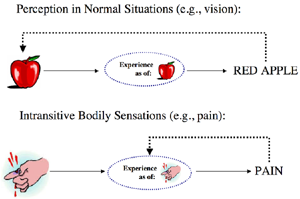

Pain
Pain is the most prominent member of a class of sensations known as bodily sensations, which includes itches, tickles, tingles, orgasms, and so on. Bodily sensations are typically attributed to bodily locations and appear to have features such as volume, intensity, duration, and so on, that are ordinarily attributed to physical objects or quantities. Yet these sensations are often thought to be logically private, subjective, self-intimating, and the source of incorrigible knowledge for those who have them. Hence there appear to be reasons both for thinking that pains (along with other similar bodily sensations) are physical objects or conditions that we perceive in body parts, and for thinking that they are not. This apparent paradox is one of the main reasons why philosophers are especially interested in pain. One increasingly popular but still controversial way to deal with this apparent paradox is to defend a perceptual or representational view of pain, according to which feeling pain is in principle no different from undergoing other standard perceptual processes like seeing, hearing, touching, etc. But there are many who think that pains are not amenable to such a treatment. Although it was the treatment of pain as a sensory-discriminative experience that had dominated the philosophical discussions throughout most of the twentieth century, attention to pains’ affective-motivational dimension has gained prominence in recent years.
- 1. The common-sense conception of pain
- 2. Sense-datum theories
- 3. Perceptual theories
- 4. Representationalist theories
- 5. Evaluative and motivational theories
- 6. Eliminativism about pain
- 7. Conclusion
- Bibliography
- Academic Tools
- Other Internet Resources
- Related Entries
1. The common-sense conception of pain
There are two main threads in the common-sense conception of pain that pull in opposite directions. We might call this tension the act-object duality (or ambiguity) embedded in our ordinary concept of pain.
1.1 First thread: pain as something in a body part
The first thread treats pains as particulars spatially located in body regions, or more generally, as particular conditions of body parts that have spatiotemporal characteristics as well as features such as intensity (among others). This thread manifests itself in common ways of attributing pains to bodily locations, such as the following:
- (1) I have a sharp pain in the back of my right hand.
- (2) There is a throbbing pain in my left thigh.
- (3) My right shoulder hurts.
- (4) My wisdom tooth aches.
According to this thread, pains are like physical objects or specific conditions of physical objects. We also commonly use the verbs ‘feel’ or ‘experience’ to describe our epistemic relation to pains attributed to body parts:
- (5) I feel a sharp pain in the back of my right hand.
- (6) I am experiencing pain in my upper left thigh, etc.
(5) suggests that we stand in some sort of perceptual relation to a spatiotemporal particular. Without an indefinite article, (6) suggests that I perceive some quantifiable feature or condition of my thigh. When we feel pains in bodily locations, our attention and nursing behavior are directed toward those locations.
Less frequently, we also talk about the same pain returning or lasting intermittently:
- (7) I have been having the same pain in my knee whenever I start jogging.
- (8) My headache returned the moment we started having the same argument again.
So according to this thread when we feel pain in parts of our bodies, we perceive something or some condition in those parts. When we report them by uttering sentences like (1) through (8), we seem to make perceptual reports. These reports seem on a par with more straightforward perceptual reports such as:
- (9) I see a dark discoloration on the back of my right hand.
- (10) I see the red apple on the table.
- (11) I heard a big explosion.
- (12) I am smelling the sweet odor coming from the rose garden.
- (13) I feel the smooth texture of the surface, etc.
Compare, for instance, (5) and (9): they seem to have the same surface grammar demanding a similar perceptual reading according to which I stand in some sort of perceptual relation to something.
Thus, this thread in our ordinary conception favors an understanding of pains as if they were the objects of our perceptions. When this is combined with our standard practice of treating pains as having spatiotemporal properties along with other similar features typically attributed to physical objects or quantities, it points to an understanding of pains according to which pains might plausibly be identified with physical features or conditions of our body parts, probably with some sort of (actual or impending) physical damage or trauma to the tissue. Indeed, when we look at the ways in which we talk about a pain, we seem to be attributing something bad to a bodily location by reporting its somatosensory perception there, just as we report the existence of a rotten apple on the table by reporting its visual perception.
Nevertheless, the very same common sense, although it points in that direction, resists identifying a pain with any physical feature or condition instantiated in the body. Thus it also seems to resist identifying feeling pain in body regions with perceiving something physical in those regions.
A quick thought experiment should confirm this. Suppose that we do in fact attribute a physical condition, call it PC, when we attribute pain to body parts, and that PC is the perceptual object of such experiences. So, for instance, John’s current excruciating experience (call this E) is caused by and represents a physical condition in his right thigh and our ordinary concept of pain applies in the first instance to this condition in his thigh. From this it would follow that
(a) John would not have any pain if he had E, but no PC in his thigh
(as in the case of, for instance, phantom limb pains and centrally generated chronic pains such as sciatica),
and, conversely,
(b) John would have pain if he had PC but no E
(as would be the case, for instance, if he had taken absolutely effective painkillers or his thigh had been anesthetized).
But these statements are intuitively incorrect. They appear to clash with our ordinary or dominant concept of pain, which seems to track the feeling of pain (experience) rather than the physical condition. This resistance to identifying pains with localizable physical conditions comes from the second thread found in the very same common-sense conception of pain.
1.2 Second thread: pain as subjective experience
That pain is a subjective experience seems to be a truism. Given our common-sense understanding of pain, this seems to be the more dominant thread: instead of treating pains as objects of perceptual experience, it treats them as experiences themselves. Indeed it is this thread that the official scientific definition of ‘pain’ picks up and emphasizes, which was first formulated in 1979 by a committee organized by the International Association for the Study of Pain (IASP), and has been, since then, widely accepted by the scientific community and clinicians:[1]
Pain: An unpleasant sensory and emotional experience associated with actual or potential tissue damage, or described in terms of such damage.
Note: ... Pain is always subjective. Each individual learns the application of the word through experiences related to injury in early life. Biologists recognize that those stimuli which cause pain are liable to damage tissue. Accordingly, pain is that experience we associate with actual or potential tissue damage. It is unquestionably a sensation in a part or parts of the body, but it is also always unpleasant and therefore also an emotional experience. Experiences which resemble pain but are not unpleasant, e.g., pricking, should not be called pain. Unpleasant abnormal experiences (dysesthesias) may also be pain but are not necessarily so because, subjectively, they may not have the usual sensory qualities of pain. Many people report pain in the absence of tissue damage or any likely pathophysiological cause; usually this happens for psychological reasons. There is usually no way to distinguish their experience from that due to tissue damage if we take the subjective report. If they regard their experience as pain, and if they report it in the same ways as pain caused by tissue damage, it should be accepted as pain. This definition avoids tying pain to the stimulus. Activity induced in the nociceptor and nociceptive pathways by a noxious stimulus is not pain, which is always a psychological state, even though we may well appreciate that pain most often has a proximate physical cause. (IASP 2011 Web Edition, cf. IASP-Task-Force-On-Taxonomy 1994)
Like other experiences as conscious episodes, pains are thought to be private, subjective, self-intimating, and the source of incorrigible knowledge. These elements can certainly be found in the IASP characterization, which also adds that pain experiences are unpleasant. Indeed, by emphasizing that pain is always a “psychological state” the note warns against a conception of pain suggested by the first thread above.
Interestingly, however, when we talk about pains as experiences, we
also, in the same breath, talk about feeling them as if these
experiences were also the object of some sort of inner perception,
which suggests introspection. Indeed the discussion of privacy,
subjectivity, self-intimation, and incorrigibility naturally forces us
to talk this way. These are paradigm features that many have
thought mark the mental phenomena as such.
Pains are said to be private to their owners in the strong sense that no one else can epistemically access one’s pain in the way one has access to one’s own pain, namely by feeling it and coming to know one is feeling it on that basis. This sharply contrasts with the public nature of objects of standard perception, that is, perception of one’s immediate extramental environment including one’s body. Let’s call this exteroception, to contrast with introspection which is access to one’s intra-mental activity. So, for instance, the very same apple I see on the table can be seen by others in possibly the exact same way I see it, so is not private in this sense.
Pains also seem to be subjective in the sense that their existence depends on feeling them. There is an air of paradox when someone talks about unfelt pains. One is naturally tempted to say that if a pain is not being felt by its owner then it does not exist. Again compare the subjectivity of pains to the ‘objectivity’ of the objects of standard exteroception. The apple I see does not depend on my perceiving it in order to exist: (pace Berkeley and phenomenalists) its existence is independent of my, or for that matter anyone else’s, seeing it.
Not only do people seem to have a special epistemic access to their own pains, they also seem to have a very special epistemic authority with respect to their pain: they seem to be incorrigible, or even infallible, about their pains and pain reports. Necessarily, if I sincerely believe that I am in pain, then I am in pain. Conversely, if I feel pain, then I know that I am in pain. This is the self-intimating aspect of pain experiences.
In short, there doesn’t seem to be any room for a possible gap between the appearance of pain and being in pain (that is, no appearance/reality distinction is applicable to pain). As Kripke famously put it:
To be in the same epistemic situation that would obtain if one had a pain is to have a pain; to be in the same epistemic situation that would obtain in the absence of pain is not to have a pain…. Pain … is not picked out by one of its accidental properties; rather it is picked out by its immediate phenomenological quality…. If any phenomenon is picked out in exactly the same way that we pick out pain, then that phenomenon is pain. (Kripke 1980, pp. 152–53)
If there is no appearance/reality distinction applicable to pain, then
it seems that one cannot be mistaken about one’s beliefs about
one’s pain formed on the basis of feeling pain in the way one
can be mistaken about the existence and properties of the apple one
sees. In the latter case, appearances can be misleading precisely
because the perceptual appearance of an apple might not correspond to
what the apple is like in reality. In apparent contrast to pain,
normal exteroception always involves the possibility of misperception,
and thus miscategorization (that is, misapplication of concepts to the
objects of exteroception). Even with a healthy dose of
skepticism about whether pain experiences (or, sensations in general)
always exhibit these features, it is clear that the strong and robust
(almost definitional) association of these features with pain
experiences suffice to make pains puzzling and problematic — as
we will see shortly.
1.3 The tension between the two threads
Now that the two threads in our ordinary conception of pain are in full view, we can better appreciate why they are in tension. Experiences are in the head, if they are anywhere. Indeed, for most physicalists, they are in the head by being realized in the brain or in the central nervous system. So we can’t be locating pains qua experiences (or qua sensations, for that matter) in body parts when we correctly utter sentences such as (1) through (6) — discounting headaches perhaps. But then what are we locating when we seem to attribute pains to body parts? Recall that, although the first thread in our common-sense conception treats pains as spatiotemporally locatable particulars or particular conditions of body parts, it does not identify pains with them — it only exerts pressure towards such an identification in the light of the fact that there doesn’t seem to be any other credible alternative (but see below). We have already conducted a little thought-experiment to bring this out in Section 1.1. Comparing the following two sentences will help us understand the tension better:
(5) I feel a sharp pain in the back of my right hand.
(9) I see a dark discoloration on the back of my right hand.
It is reasonably clear that for (9) to be true, I have to stand in the seeing (perceiving) relation to a dark discoloration on the back of my right hand, i.e., to a certain surface region on the back of my hand marked by a darker shade of the usual color of my skin, a certain region that can be seen by others possibly in the same way in which I see it. Note that if I am hallucinating a dark discoloration on the back of my hand, then (9) is simply false. Also note that although the truth of (9) doesn’t require the possession of any concept by me expressed by the words making up the sentence, my uttering of (9) to make a report typically does — if we take such utterances as expressions of one’s thoughts and take thoughts to be composed of concepts. So my seeing would typically induce me to conceptually identify something on the back of my hand as a dark discoloration. This is a typical case of categorization of something extramental under a concept induced by an exteroceptive experience. Of course, my uttering of (9) does more than attribute a physical property to a bodily region: it also reports that I am seeing it.
What has to be the case for (5) to be true? Whatever the complete analysis of sentences like (5) turns out to be, one thing seems reasonably clear: the truth-conditions of (5) put no constraints whatsoever on how things physically are with my hand. Anyone who has a sufficient mastery of our ordinary concept of pain has no difficulty in understanding how (5) could still be true even though there is nothing physically wrong with my hand, which is typically the case in centrally caused chronic pain syndromes.[2]
So we standardly use sentences like (5) to make correct statements about a pain felt in a bodily location even when there may be nothing wrong with that location. In other words, when we make claims about where it hurts (attribute pain to bodily locations), strictly speaking we in fact refrain from logically committing ourselves to there being anything physically wrong in those locations — even though we normally expect to find some physical disorder in them. Compare this to my uttering (9) on the basis of my having a very vivid visual hallucination of a discoloration on the back of my hand. In such a case, my utterance would be incorrect, because in uttering (9) I commit myself to finding some physical condition (namely, a dark discoloration) on the back of my hand. If and when I realize that I have hallucinated, then I correct myself and revert to introspective mode by saying things like “I seemed to see a discoloration on the back of my hand” or “it appeared to me that there was a discoloration,” etc. Nothing of this sort happens when I realize or am told that there is nothing physically wrong with my hand: I still correctly continue to report the pain I feel there by uttering the very same sentence, (5), or its equivalents. I don’t need to make any correction in my pain report. This shows that despite the pressure exerted by the first thread, it is the second thread that seems to capture the dominant common-sense conception of pain — as indeed the IASP definition above indicates.
Still the puzzle remains: what is it that I am doing when I appear to be attributing something to the back of my hand by correctly uttering (5) — if, as agreed, I am not attributing a mental experience or a physical condition there? It is not clear whether there is a common-sense answer to this question. Just as the scientific definition doesn’t touch on the issue of our common practice of correctly locating pains in healthy body parts, the common sense would probably draw a blank if the problem were articulated explicitly and the question is pressed really hard.
Or maybe not. Intuitively and somewhat naively, what common sense would drive us to say when pressed hard might be something like the following.[3] Granted, by uttering (5) I am not attributing any sort of physical thing or condition to the back of my hand, nor am I locating a mental experience there — experiences and sensations are strictly speaking in the head if they are anywhere. But when I attend to my hand with my mind’s inner eye, so to speak, I clearly feel something there. I can introspectively examine different qualities of that thing such as its sharpness, volume, intensity, unpleasantness, burning quality, etc. I can in real time follow the changes in it: it is now somewhat less intense and unpleasant, now more; it is getting duller now, it was sharper and brighter a moment ago; it seems to be moving toward my fingers, etc. Clearly, I seem to be confronted or acquainted with spatially located something that I can introspectively examine carefully in real time and report on its various qualities. It is this thing, the object of my inner attention, which is located in the back of my hand, which seems essentially private, subjective, and about which I can’t be wrong.
If this is what one might like to say intuitively and naively, one should be prepared to swallow its strange consequences: this object of my inner attention is both located in public space and logically private, that is, only I can have epistemic access to it despite its being spatiotemporally located. Also, the existence of this object seems to literally depend on my epistemic access to it: it seems to go out of existence when I cease to feel it (perceive it). In addition, if it is the object of my attention (separate from my attention), how could it be the case that I cannot be wrong about it? And importantly, if this object is not physical, what sort of thing could it be? A ghostly mental particular that I can introspectively attend to which is nevertheless spatiotemporally located beyond my head?
The act-object duality embedded in our ordinary concept of pain yields strange results when followed intuitively and naively to its logical end. But perhaps this duality is a robust symptom of a deeper truth underlying all perception and introspection. Perhaps pain is simply the most paradigmatic example of a broad range of perceptual experiences where this deep underlying iceberg shows its tip most prominently and revealingly — albeit confusedly. Indeed this is exactly the case according to so-called sense-datum theories.
2. Sense-datum theories
2.1 Introduction
Standard perception (exteroception) can be analyzed as involving the perception (act) of a public object. The perceptual act on the part of the perceiving subject, in turn, is analyzed as involving an experience which typically induces conceptual categorization, i.e., application of concepts to the object of perception and its qualities — not to the experience. Thus perceptual experiences seem transparent to the perceiver, who may be said to perceive the extramental reality directly, without first perceiving or somehow being aware of the experience itself or its qualities. This view is supported by common sense and is typically called naive or direct realism.
According to the indirect realists, this directness is an illusion; we are in fact directly aware of experiential intermediaries, and we perceive the extramental world only indirectly, in virtue of being directly aware of these intermediaries. Most early indirect realists (e.g., Moore 1903, 1939; Russell 1912; Price 1950) thought of these intermediaries as phenomenal or mental particulars, typically called sense-data. Consider a hallucination of a red apple. Intuitively, the person having the hallucination seems to see something. This something is not, of course, an apple. But it is an object, according to sense-datum theorists, which is shaped like an apple and is really red. It is a sense-datum, a phenomenal (mental) individual which really has the qualities that it visually appears to have. Sense-data, however, are no ordinary objects: they are private, subjective, self-intimating, and the source of incorrigible knowledge. According to sense-datum theorists, sense-data are internal to one’s consciousness: they are not before one’s sense-organs. These theories claim that there is a hidden act-object structure in the perceptual awareness itself. Every perceptual awareness involves the act of being aware of phenomenal objects and their qualities that phenomenally determine this perceptual awareness, whether or not this awareness is a hallucination or a veridical perception of external objects.
On sense-datum theories, one perceives external objects and their qualities indirectly by directly perceiving (being aware of, or acquainted with) sense-data internal to one’s consciousness that resemble in various degrees the physical objects that cause them. According to sense-datum theorists, however, we are rarely, if ever, aware of this indirection in ordinary (veridical) exteroception. It is only critical philosophical reflection on features of perceptual awareness that reveals that the indirection must occur. The importance of pain and other (intransitive) bodily sensations lies in the fact that the indirection seems to be easily revealed introspectively as is shown by our unwillingness to identify the pain we attribute to body parts with anything physical in those parts.
Whatever advantages or disadvantages sense-datum theories might have with respect to genuine perception (exteroception) and misperception in general, its attraction seems undeniable when it comes to its treatment of pains and other “intransitive” bodily sensations like itches, tickles, tingles, etc.[4] According to many sense-datum theorists, pains are paradigm examples of phenomenal individuals, mental objects with phenomenal qualities whose existence depends on their being sensed or felt, and thus are logically private to their owners who feel them. This position presumably explains why we have the act-object duality or ambiguity in pain talk that we discussed earlier: pains qua localizable objects cannot exist without the corresponding acts, i.e., without someone’s acts of experiencing them (Broad 1959).[5] In other words, the concept of pain plausibly applies to both the object part of the act-object pair and to the act of being directly aware of these objects.
The puzzle of locating pains in body parts can be treated in more than one way within this framework. The most straightforward way is simply to take the phenomena at face value and say that pains as mental objects or sense-data are literally located where they seem to be located in body parts or even in empty space where one’s limb would have been, say, before the amputation. That pains are mental particulars and depend for their existence on being sensed apparently does not logically preclude their being capable of having, literally, a spatial location (see Jackson 1976, 1977 for this line).[6]
A second and more popular way of handling the location problem is to say that even though pains cannot literally be located in physical space, they can have location in a phenomenal space or field that is somehow isomorphic or systematically related to their counterparts (say, tissue damage) in physical space. In fact, this move would also work for visual sense-data that require some spatiotemporal framework. In the case of bodily sensations, this phenomenal space is sometimes called one’s somatic field by analogy to a visual field that maps onto physical space (Price 1950).[7]
2.2 Problems for sense-datum theories
The most important strength of sense-datum theories is that they are tailor-made for the peculiarities of pain experiences as well as other intransitive bodily sensations that we have discussed above. Indeed, these theories seem to take the naive, perhaps somewhat confused but intuitive understanding of pain embedded in common sense and turn it into a full-fledged philosophical theory supported on a general and independent platform about what perception involves. In other words, these theories seem to vindicate the act-object duality embedded in common-sense conception of pain.
There is irony in this. The irony is that sense-datum theories find their most natural home in intransitive bodily sensations like pain that have been traditionally and historically contrasted with standard exteroceptual experiences rather than co-classified with them (for many, feeling pain is not a perceptual affair at all). This is ironic for two reasons. First, the main proponents of sense-datum theories advanced these theories mainly as theories of exteroception, that is, perception of external physical reality. Second, when applied to standard exteroception, sense-datum theories don’t seem to support the perceptual direct (naive) realism of common sense at all. Indeed, according to common sense, when I see a red apple on the table, I am directly seeing the apple (at least its surface facing me) and its qualities like its redness. In short, although sense-datum theories that are explicitly advanced as theories of perception (exteroception) in general don’t generate much conviction, they seem to be more convincing when applied to intransitive bodily sensations like pains that have not been usually thought to be perceptual.
Despite the clash with common sense, various philosophers have advanced powerful arguments for sense-datum theories about what perception in general involves (Moore 1903, 1939; Russell 1912; Price 1950; Broad 1959; Jackson 1977, among others). There are also powerful arguments against sense-datum theories. Both sorts of arguments tend to be general arguments not directly related to pain, so we won’t cover them here (but see the entry on sense-data). Whatever the fate of sense-datum theories might be as general theories of exteroception, their appeal as a model for understanding pains and other intransitive bodily sensations is very strong. Indeed, as noted before, introspection seems to be the right mode of access involved in pain. So even if one finds the anti-sense-datum arguments convincing and rejects indirect realism of this kind for standard exteroception, there may still be room for adopting a sense-datum theory for intransitive bodily sensations and for pain in particular.
Nevertheless, it is plausible to argue that this apparent strength of sense-datum theories of pain is also one of their main weaknesses, in that their function seems to merely codify the conceptual peculiarities of pain into a theory rather than explain them. After we are told how the sense-datum theories treat pains and other bodily sensations, our understanding of these sensations don’t seem to be deepened or advanced significantly. Whatever puzzles we had at the start with only the common-sense conception of pain at hand, they seem to be transformed into puzzles about what the theories themselves say or imply.
For instance, the question about what it is that we seem to attribute to or locate in our body parts when we claim to have pains in just those parts is answered, on one version of the theory, by saying that we literally locate mental objects with phenomenal qualities in those parts. But pains, even by the standards of sense-datum theories, are mind-dependent objects, and many have taken this to imply that pains are internal to one’s consciousness or experience, and are epistemically transparent to their owners partly because of this (Perkins 1983, 2006).[8] If they were literally in physical space, does this mean that one’s mind spatially extends or overlaps with one’s body? Alternatively, shouldn’t it be possible for others, at least in principle, to “come across” these pains, that is, access and interact with them physically? It is one thing to say that there is no logical inconsistency about pains literally being in physical space, but it is another to make the view plausible. The latter requires giving positive arguments showing why our intuitions to the contrary might mislead us here.
On the other version of the theory, we are told that even though we seem to locate something in public space, appearances are misleading; rather, we are locating private mental objects in a private phenomenal space, which is conceived to be a kind of space, not merely a representation of real space. So, on this version, pains are not, after all, located in body parts, ordinarily understood. But it is not clear how these two spaces are supposed to relate to or interact with each other. Phenomenal space is not physical space, nor is it a subregion of that space. Thus the question of how they can causally interact becomes an issue for two reasons. First, there is the standard worry about how a physical event can influence or be influenced by a non-physical event in a non-physical space. Second, these two spaces need to be systematically correlated with each other, but it is not clear whether a principled mapping function can be defined for the correlation especially in the absence of causation. At any rate, these constitute significant challenges for the defenders of this view.
Apart from their strange consequences, sense-datum theories seem to commit their defenders to anti-physicalism. A naturalist who is trying to understand pain phenomena within a physicalist framework could hardly admit the existence of phenomenal objects (Lycan 1987a, 1987b). If there are sense-data, physicalism seems just false. A physicalist cannot admit actual objects, which are, say, literally colored, shaped, moving and so on, that one is directly aware of but are not identical to the extramental objects of perception. So understood, there seem to be no sense-data to be found in the physical world.
3. Perceptual theories
Because sense-datum theories are most plausible when applied to intransitive bodily sensations, many philosophers, who believe that a naturalist account of ordinary perception can be given without introducing sense-data, have attempted to understand pains and other bodily sensations as species of ordinary perception (exteroception). The so-called perceptual theories of pain are advanced and defended on the hope that pains and other intransitive bodily sensations, contrary to first appearances, are species of information gathering which work on the same principles that govern other sensory modalities for which a successful direct realist account can be given.
3.1 Introduction
The core commitment of any perceptual view of pain, put as broadly as possible, is that normally, in having or feeling pain, one is perceiving something extramental. In other words, feeling pain normally involves perceiving something in the same sense in which one perceives a red apple when one sees it in good light. It involves exteroception. Sometimes, in ordinary parlance, the term ‘perception’ is used in conjunction with ‘pain’ as in ‘pain perception’ to mean awareness of pain, or just feeling/experiencing pain. This is the introspective use of ‘perception’ and should be sharply distinguished from what the perceptual theorists mean when they claim that feeling pain involves perceiving something. They have exteroception in mind, and we’ll use the term always in this sense.
According to perceptual theorists, when one feels, say, a sharp pain in the back of one’s hand, one perceives some physical feature or condition of one’s hand. The proper modality for this perception is somatosensory, similar to the sensory modality of touch or proprioception (the sensory modality internal to one’s body that informs one about the position and movement of one’s body and body parts). Most perceptual theorists identify this feature with tissue damage or some condition of the tissue that would likely result in damage if sustained in that condition. More abstractly, it is some sort of physical disorder due to some tissue trauma, irritation, inflammation, or some such pathological condition, or a condition close to such. It is also possible to identify the object of perception in pain with the activation of nociceptors innervating the damaged or irritated tissue. (Nociceptors are peripheral nerve endings relatively specialized to respond to potentially damaging stimuli, i.e., to noxious stimuli). Let’s use ‘tissue damage’ as a stand-in for whatever physical disorderly condition of bodily tissue is said to be perceived in feeling pain according to perceptual theorists. Normally, when we talk about the location of a pain, we are talking about the location of this perceptual object, i.e., the location where the tissue damage is occurring or about to occur.
Perceptual theories of pain as alternatives to sense-datum theories were first explicitly stated and philosophically developed in the 1960s. The most influential and prominent defenders were Armstrong (1962; 1968) and Pitcher (1970; 1971). There were others, but in terms of setting the tone and philosophical agenda for the subsequent discussion for decades to come, it is fair to say that no one has surpassed their enormous influence.[9] At the time, the dominant view was that pains and other intransitive bodily sensations are not perceptual at all: they were conceived to be sensations or experiences (à la sense-datum theories) that are reliably caused by (actual or impending) injury or damage to body tissue or internal organs. They were thus thought to be useful warning signals, but they didn’t have much in common with standard ways of perceiving extramental world. This view has still many defenders today. Although the conception of pains as sense-data has been largely abandoned, those who are not sympathetic to perceptual theories still hold what might be called the “sensation or qualia view of pain”, according to which pain is not a phenomenal object but a phenomenal quality of one’s experience, or alternatively, it is a subjective experience with certain qualia or qualitative character that one is directly acquainted with when one is in pain. (Conee 1984 defends a qualia view of pain. But he draws a distinction between the state of being in pain and this state’s qualitative content, qualia. He claims that we use ‘pain’ for both, depending on the context. Aydede 2019 develops a modern version of qualia theories that is adverbialist and weak representationalist with completely physicalist credentials and claimed to be free of the problems that plagued the older qualia theories.)
3.2 The appearance/reality problem
The main source of resistance to a perceptual view of pain comes from the common-sense conception of pain according to which pains are sensations with essential privacy, subjectivity, self-intimation, and incorrigibility. These apparently essential features of pains pose difficulties for any perceptual theory. Indeed, they can be used in advancing anti-perceptualist arguments whose general form can be put in the following way. Genuine perception always involves the possibility of misperceiving the perceptual object that is not essentially private and subjective. In other words, there is always an appearance/reality distinction applicable to the objects of genuine perception which gives rise to the possibility that the perceptual appearance of this object misleads us about what the object is like in reality. The main reason for this is that these objects have a reality beyond their appearances. They are thus public objects and capable of existing on their own without anyone’s perception of them. But feeling pain has none of these features. Therefore, it cannot be genuine perception.
So, how do the perceptual theorists handle this objection, which lies behind the intuitive resistance to treating pain as a form of perception? Given the core commitment of perceptual views (namely, that feeling pain involves perceiving something extramental), one might think that perceptual theorists identify pain with tissue damage. Indeed, if one takes this view, the above objection seems almost decisive against it. But relatively few defenders actually take this route — among the most notable are Newton (1989), Stephens and Graham (1987), and Hill (2004, 2006). Most others, including Armstrong and Pitcher, bowed to common-sense understanding of pain and identified pains with pain experiences or sensations, understood in a direct realist fashion. If pains are identified with experiences, not with their causes (i.e., tissue damage), then the above objection seems to disappear (but see below).
It is primarily for this reason that most perceptual theorists identify feeling pain with having an experience in the first place — just as the pain scientists and clinicians do (see IASP definition above) following the second thread in our ordinary conception of pain. But this is the experience mediating or involved in the perception of tissue damage. In other words, they grant that the (dominant) concept of pain is the concept of a subjective experience, but they insist that this experience is essentially perceptual: it constitutes our perception of tissue damage. Compare the situation with seeing. In seeing a red apple in good light, I am having a visual experience which is perceptual: it constitutes my seeing the red apple. The difference lies not in the flow of information, but in the locus of our spontaneous interest and conceptual identification directly induced by the perceptual experience. According to most perceptual theorists, we apply the concept of pain, PAIN, primarily to the perceptual experience we are having, not to the object of this experience, i.e., tissue damage (even though, as discussed above, common sense also uses confusingly the same word ‘pain’ to indicate where the tissue damage might be occurring by applying it to a bodily location — more on this shortly).[10 In other words, ‘pain’ names a subjective experience. In vision, however, the locus of conceptual identification is different: normally it is the object of our visual experience we are interested in, say, a red apple seen in good light and identified as such. Thus, we both perceptually and conceptually focus on it and its visible properties such as its redness, roundness, etc., by applying our concepts, RED, ROUND, APPLE, to it on the basis of our visual experience. Of course, we are sometimes interested in and can focus and report on our visual experiences too, but this happens usually when we are not sure about what we are seeing.
There is thus an asymmetry in our spontaneous reaction to incoming stimuli in seeing and having pain; that is, our spontaneous interest and focus directly resulting from the perceptual experiences is different in each case. We can represent this asymmetry with a schematic (Figure 1).

Figure 1: There is asymmetry in concept application even when it is assumed that the structure of information flow may be symmetrical in the contrast cases.
Thus the incorrigibility mentioned before reduces to one’s incorrigibility about one’s occurrent experiences. To the extent to which we are incorrigible in discriminating and conceptually identifying our own experiences, to that extent we cannot be wrong about our own pains. Hence the locus of concept application is the pain experiences, even though it might seem to us as if we were applying the concept of pain to bodily locations (see below). It follows that hallucinations or illusions are possible, in one sense, not about feeling/experiencing pain, but about whether these experiences’ correctly represent some tissue damage, that is, the object of perception in feeling pain.
The privacy and subjectivity of pains are explained similarly. If pains are experiences, they cannot exist without being the state of someone’s mind. In other words, they exist insofar as one has them: they are mental states or processes, hence essentially mind-dependent. The privacy of pains again reduces to the privacy of experiences. There may be philosophical problems about how privacy, subjectivity and incorrigibility are possible in a completely physical world, but if there are such problems, they are general problems about having perceptual experience of any kind, not necessarily pertaining to pains and other intransitive bodily sensations.
3.3 The problem of pain location
The perceptualist identification of pains with experiences is not in the clear yet: the perceptual theorist has to give an account of the common practice of attributing pains to bodily locations. For if pains are perceptual experiences they can’t be intelligibly (let alone correctly) located in body parts (except perhaps in the head).
The most common perceptualist treatment of this problem concedes that there is no way to analyze sentences attributing pain to body parts, like (1)–(6), which would do complete justice to all aspects of our common-sense conception of pain. Nevertheless, the resulting account, it is claimed, comes pretty close. According to the basic proposal, when I utter a sentence like
(5) I feel a sharp pain in the back of my right hand,
I primarily self-attribute a certain kind of experience which has an intentional content (Armstrong 1962, 1968, pp. 314–316; and Pitcher 1970, pp. 383–385, 1971 — see also Dretske 1999, 2006; Tye 1997, 2006a). To say that an experience has an intentional content is to say that it represents a certain situation or state of affairs (which may be quite complex), or to say that it has an intentional content with a non-indicative function like issuing a command (imperative content — see below). So for instance, when I see a red apple on the table, I am having a visual experience which represents, among other things, a red apple on the table. Some perceptualists might describe the proper intentional or representational content of experiences in less objectual terms by not naming what is represented in terms of ordinary objects like apples and tables. For these theorists, it is more appropriate to characterize the representational content of perceptual experiences in terms of the ways in which the sensible qualities of those objects are instantiated or distributed in one’s perceptual field. Experiences detect or track these qualities. For instance, they may say that my visual experience represents the instantiation of redness with the instantiation of a certain (apple-like) shape quality, etc. But both ways of characterizing this content are meant to be objective in the sense that they represent extramental reality (at least, partly — it all depends on how one conceives of so-called secondary qualities). Treating perceptual experiences as having intentional content is appropriate and in line with the naturalistic motivation behind developing perceptual accounts in general, for this is how they serve their primary function of informing their owners about their immediate extramental environment, including bodily environment.
So the proposal is that, just like other perceptual experiences, pain experiences also represent. They represent tissue damage as occurring in a certain region of one’s body. The location of pain, then, is the location of tissue damage as represented by pain experiences. The location is an intentional location. So (5) should be analyzed as self-attributing an experience which represents a certain kind of tissue damage occurring in the back of my hand. In other words, even though the surface structure of sentences (5) suggests that there is an attribution of pain to a bodily location (more strictly, that I stand in the feeling relation to a pain which is located in a part of my body), the proposed analysis says that this is not what is going on. What I do when I utter (5) is an attribution of a different sort: I attribute to myself a feeling state (an experience) which has an intentional content to the effect that a certain region of my body is in a physical condition of a certain sort.
On this view, there is thus a confusion in common-sense ways of talking, due to the fact that the pain is not in my hand; the pain, being a state of feeling or experience, is “in my mind.” It is the physical disturbance that is in my hand which my feeling state represents (in a confused and indistinct way, as Descartes would put it). Upon reflection, however, we may realize that in uttering (5) I actually attribute an intentional feeling state to myself which in turn attributes a physical disturbance to my hand. The colloquial ways of speaking just jumble the pain with the disturbance, and thus confuse and mislead us. Pains, on this view, are experiences, not objects of our experiences. Moreover, since these experiences have representational content, they have accuracy conditions: they can be correct or incorrect; they can veridically represent or misrepresent. But even when they misrepresent, these experiences are pain experiences. So I can be in genuine pain, even though there is nothing physically wrong with my hand.
Note that according to this analysis, there are, in a sense, two kinds of property attribution going on: an attribution of an experience and an attribution of tissue damage to a body part. But in uttering (5) I do only the former attribution, not the latter. The latter attribution is done not by me but by my experience, so to speak, by representing it as happening in my hand. This is why I am not logically committed to finding tissue damage in my hand in truly uttering (5) — even though this is what I normally expect to find there. Indeed, as observed in the first section, if it turns out that there is nothing physically wrong with my hand, I am not wrong. (5) is still true. But my experience is now wrong: it misrepresents the back of my hand as having something physically wrong with it, as if some tissue damage were occurring there. I am having an illusion about my hand but I am still in genuine pain. Illusory or hallucinatory pain experiences are still genuine pains.
Armstrong’s and Pitcher’s perceptual accounts of pain location have been very influential. Treating pain location as the intentional location of tissue damage as represented in the pain experience, in one form or another, seems to dominate the thinking in this area. Nevertheless, there is a sizable philosophical literature on the problem of pain location or the spatiality of pain in general.[11
3.4 Direct and indirect perceptual theories
The perceptual view of pain as presented so far is a view even an indirect realist can subscribe to, although, as a matter of historical fact, very few indirect realists have done so (Perkins 1983, 2006; Maund 2003, 2006). A sense-datum theorist is someone who thinks that all perception of extramental reality is indirect, mediated by a direct perception of sense-data that stand in certain systematic relations to extramental objects in the world in virtue of which sense-data contingently come to represent them. So it is entirely possible, in fact reasonable, to hold that pain sense-data are also representational. In other worlds, direct awareness of pain sense-data could constitute the indirect perception of tissue damage in bodily regions which typically and systematically cause these sense-data.
The reason why this line was not pursued by indirect realists has probably something to do with the intuitive resistance against any perceptual view of pain already embedded in our ordinary conception that we discussed above.[12] Indirect realists like sense-datum theorists, as we have already seen, have the theoretical resources to accommodate the intuitive understanding of pain without forcing it into a perceptualist mold. Without any qualms, they can say that we are directly and immediately aware of pain qua a mental object or quality, whether or not this represents or signals tissue damage. This is to say that they already have a locus of concept application in their theory for the concept of pain: PAIN directly applies to the experience or to its internal direct object, i.e., to either a sense-datum or to its direct awareness. This seems to accommodate all the intuitions embedded in common sense; why go further? Furthermore, if one is not a perceptualist, one doesn’t have an obligation to deal with what we’ll call below the problem of focus, the problem of explaining why there is an asymmetry in conceptual focus between pain and standard exteroception if both are genuinely perceptual.
In practice, however, almost all defenders of perceptual view of pains are direct realists. If one wants to run a direct realist version of the perceptual theory, however, one immediately runs into the difficulty of finding an appropriate locus for direct perceptual awareness, and for that matter, a locus for immediate concept application; that is, one runs into the difficulty of finding an object, state, or event to which we spontaneously apply PAIN, ITCH, TICKLE, etc., when we are introspectively aware of our pains, itches, tickles, etc., and report them on this basis. This difficulty arises because the mark of any (early) direct realism in the theory of perception is the repudiation of consciously available perceptual intermediaries that mediate standard exteroception: when I see a red apple on the table, there is no object or quality distinct from the apple and its redness such that I see the apple in virtue of seeing it (or more generally, in virtue of directly perceiving or being aware of it). On the direct realist view, when I see an apple, I directly perceive, or am directly acquainted with, the apple and its qualities such as its redness. This view works well in veridical perception: the locus of concept application is always the public object of perception, like the apple and its properties. It also explains why the spontaneous concept application is the way it is even when one hallucinates or has illusions. Even when one hallucinates a red apple, one is naturally disposed to apply the concept RED APPLE to what one either takes or is tempted to take to be the public object of one’s epistemic efforts and its publicly available features, and rarely, if ever, to what one believes to be a private mental object or quality.
But how is the repudiation of consciously available perceptual intermediaries to be reconciled with the admission that the concept of pain is the concept of a subjective sensation/experience of a certain sort? Recall that most perceptual theorists admit that introspective reports of pain in body regions are reports of experiences that represent physical disorder of some sort in those regions. This is just to say that when one is in pain one is directly aware of a sensation or experience, i.e., pain. This in turn means that the concepts we are spontaneously prompted to apply in having pains and other intransitive bodily sensations directly apply to the prompting sensations/experiences in the first place — appearances to the contrary. So how to understand the direct realist’s talk of conscious sensations or experiences?
3.5 Adverbialist perceptual theories
Direct realists reject the act-object analysis of perceptual experiences advanced by sense-datum theorists and other indirect realists. According to most early direct realists (e.g., Ducasse 1952, Sellars 1975), even when visually hallucinating a red apple on the table, one does not directly see a private mental particular or a constellation of mental qualities; rather one is having a visual experience that is like an experience which is normally brought about when one actually sees a real red apple on the table. Direct realists, in other words, typically insist that such cases should not be analyzed in terms of a perceiver standing in a certain perceptual relation to a private mental object or quality. Rather the analysis involves only one particular, the perceiver herself, and her being in certain sorts of (perceptual, experiential) states or conditions that are typically brought about under certain circumstances in which one genuinely perceives something. In standard cases, when one is having a veridical perception, the experiential state of the perceiver is brought about by the actual object of her perception, and the perceiver’s state is qualitatively differentiated by the causal influences of the sensible properties of the public object. In nonstandard cases like in hallucinations and illusions, phenomenologically the same kinds of states are brought about by different causal routes, and the qualitative differentiation of one’s experiential state in such non-veridical cases is the result of deviant causal influences. (Pitcher 1970, p. 384)
This sort of analysis of experiences is sometimes known as adverbialism in the literature because in perceiving a red object one is said to be in a state of perceiving something “red-ly.” The theoretical import of this way of talking is that perceiving something that is red is a manner of perceiving that object that would be distinct from the manner of perceiving it if the object were blue, in which case one would be perceiving it “blue-ly.” Similarly when one hallucinates a red object, there is only one object, the perceiver who is sensing in a certain manner, namely, red-ly. In other words, ‘red’ is said to qualify not a private object but rather a state or activity of a person, that state being a manner of perceiving or sensing physical objects that are red.[13] For our purposes, keeping up with the general naturalistic motivation behind developing direct realist views, we can take adverbialism as an attempt to get rid of mysterious mental objects or qualities in favor of metaphysically less costly states or activities of persons or manners of perceiving that qualify persons qua subjects of experience. So a pain experience, for a direct realist, is a specific manner in which tissue damage is (somatosensorially) perceived in a bodily region. When we report pain, we report the occurrence of experiences understood this way — adverbially.
Adverbialism of this sort can be effectively combined with intentionalism or representationalism about experience (for more on the connection between adverbialism and representationalism, see Kraut 1982, and Lycan 1987a, 1987b). An adverbialist has to somehow characterize these ways or manners of sensing/perceiving for distinguishing between them, and a natural way to do that is by appealing to the standard or canonical conditions under which those perceptual events are brought about (recall how direct realists want to handle a visual hallucination: one is having a visual experience that is like an experience which is normally brought about when one actually sees a real red apple on the table). Thus it may be reasonable to argue that those canonical conditions are what the specific perceptual events or activities of the persons represent. For instance, it is plausible to claim that a specific perceptual activity constitutes the perception of red (= the perceptual event representing the instantiation of red) because it is the kind of psychological event regularly (canonically) caused by red surfaces — indeed one might expect that the psychophysics of sensory modalities would detail these canonical or standard conditions in objective terms. Although this maneuver is open to direct realists, it is optional. When one takes this option the result is pretty much a strong form of representationalism — for which see next section.
There are various technical difficulties with adverbialism, especially when dealing with phenomenologically complex overall experiences such as having three pains of different qualitative character simultaneously occurring in three different locations in one’s body. It is not clear whether adverbialist approaches can successfully tie the appropriate manners corresponding to different qualities with the right pains or tissue damage on different locations. (See Jackson 1975, 1977 for a detailed criticism of this sort; Tye 1996a, pp. 74–77, contains a useful summary.) Furthermore, even when one might successfully get rid of mysterious mental objects like sense-data with this adverbialist move, it is not clear whether adverbialism might still lead to a form of property dualism according to which one is directly aware of certain (non-physical) phenomenological qualities instantiated by experiences realized by brain states. These qualities seem to be required to explain how the manners of different perceptual activities of a perceiver can be differentiated.
There are other sources of resistance to direct perceptual theories of pain and other intransitive bodily sensations. Some objections stem from considerations about whether direct perceptual theories can give adequate accounts of perception in general, so are not specific to their treatment of pain. One of the most frequently discussed worries about direct perceptual theories in general is whether they can do justice to the internalist intuition that perceptual experience is phenomenally rich and peculiar in a way that cannot be pushed back to the extramental world. In the case of early direct realists like Armstrong and Pitcher, this worry is even more pressing since they were cognitivist about perceptual experience in general; that is, they attempted to explain perception in terms of belief acquisition (or, in terms of acquisition of belief-like cognitive states). But beliefs don’t seem to have the right kind of phenomenology associated with perceptual experiences and bodily sensations (see Everitt 1988 and Grahek 1991 for this kind of criticism). As pointed out earlier, early direct realists played down the importance of experiential phenomenology and sometimes even denied its existence fearing that acknowledging it will lead to the introduction of sense-data or “irreducibly psychic” qualia.[14] But this concern about qualia or phenomenology in general drove many away from the early direct perceptual theories (especially those who were not much worried about skepticism and epistemology in general) with the conviction that these theories are not adequate after all for capturing the rich and robust phenomenology of perceptual experiences.
4. Representationalist theories
Confronted with such difficulties and many others, it is tempting to adopt a strong form of representationalism that openly admits the existence of phenomenologically rich experiences, while preserving the basic intuition and naturalistic motivation behind direct realism. Indeed, many have yielded to this temptation.
4.1 Introduction
Representationalism about pain is the view that the entire phenomenology of a pain experience is strictly identical to its representational or intentional content. In other words, the phenomenal and representational contents of pain are one and the same thing, thus they cannot come apart. Among the defenders of pain representationalism understood this way are Harman (1990), Dretske (1995, 1999, 2003), Tye (1996, 1997, 2006a, 2006b), Byrne (2001), Seager (2002), Bain (2003, 2007, 2013, 2017), and Cutter & Tye (2011), Cutter (2017).[15]
Most early direct realist accounts of perception, as mentioned before, were shy about acknowledging a robust phenomenology for experiences. This was primarily because experiential phenomenology was associated with indirect realism and sense-data theories in particular. Many early direct realists embraced adverbialism because adverbialism promised a way of being realist about experiences while avoiding an act-object view of them. Because most direct realists identified pains with sensory experiences rather than their objects, the direct perceptual theorists about pain needed a robust (realist) notion of experience. Adverbialism gave way to a strong form of representationalism by suggesting ways in which intentional content could be naturalized on the basis of those canonical conditions that causally/lawfully control the occurrence of perceptual experiences in virtue of which they represent those bodily conditions. This opened up the possibility of defending direct realism about a robust experiential phenomenology with completely naturalistic credentials. The result was strong representationalism about all experiential phenomenology, according to which the entire phenomenal (qualitative) character or qualities of any experience is metaphysically constituted without remainder by its (wide) representational content (=phenomenal content)
Hence, representationalism about experience in this context needs to be understood in a reductionist sense. As we have seen, indirect realist theories, especially in the form of sense-datum theories, were also advanced as representational theories (perhaps excluding the intransitive bodily sensations). Indeed, the old name for indirect realism was “representative realism.” On these theories, in having a perceptual experience we are directly acquainted with qualia, understood either as intrinsic qualities of experiences or as properties of phenomenal individuals like sense-data. But, at least in standard exteroception, these qualities contingently represent objective sensible properties of public objects in virtue of either resembling them or by being regularly caused by their instantiations — or both. In other words, on an indirect realist approach, they are distinct existences: qualia or sense-data come to represent public objects and their sensible properties in virtue of some contingent relations holding between them (resemblance or causation).
However, in her acknowledgment of phenomenology, the reductionist direct realist cannot have such phenomenal objects somehow internal to one’s mind or experience, nor can she endorse the existence of qualities intrinsic to experiences that we can become directly aware of in introspection — the basic direct perceptualist intuition, recall, is that our experiences are transparent to us in that they present us the world directly and immediately (this external relation is primary). So if qualia are to be retained in one’s direct realist picture of perception, these qualia need to be reduced to representational content of perceptual states. We will sometimes use ‘strong representationalism’ to distinguish this view from “representative realism” (see Block 2006 — Block uses ‘representationism’ to mark the same distinction).
Like earlier direct realists, strong representationalists tend to be naturalists or physicalists. Therefore these theories usually come with a naturalist account of how these states (thought of as realized in the central nervous system) acquire their representational content. The most common account is either an ideal causal co-variation theory (informational semantics — see Dretske 1981, Fodor 1987, Aydede and Güzeldere 2005) or a teleological psychosemantics (see Millikan 1984, Papineau 1987) or both (Dretske 1988, 1995; Tye 1996a). These are externalist theories.[16]
To recap, strong representationalism is the modern day’s direct realism about perception, where adverbialism is replaced by representationalism run on a naturalistic story about how perceptual experiences acquire their (analog) representational content that in turn constitutes their phenomenology. So, according to strong representationalism, pain experiences feel the way they do in virtue of their representational content, and nothing else. They represent various disorderly conditions of bodily tissue. The way they represent these conditions is analogous to the way our visual system represents colors. If colors are (at least, partly) objective features of surfaces like their surface spectral reflectances, our visual experiences don’t represent colors as such, so we cannot come to conceptualize colors as spectral reflectances on the basis of their “grainless” visual presentations. So it is no objection to representationalism that our pain experiences don’t represent tissue damage as such, which is to say that we cannot necessarily conceptualize what pain experiences represent as tissue damage solely on the basis of these experiences.
It is sometimes said that perceptual experiences represent what they do nonconceptually, which is often times equated with analog content (realized in picture-like continuous representations). In this context we can take this as a claim about the way experiences are representationally structured: they are not structured out of concepts (discrete representations) as thoughts are usually thought to be. Every sensory modality has a range of proprietary qualities that they can detect. Pain experiences seem no different, although they may be less rich in terms of their informational content compared to vision for instance. Nevertheless, it is reasonable to argue that qualitative differences in pain experiences are due to their representing different bodily conditions. Tye lists a number of candidates:
… a twinge of pain represents a mild, brief case of damage. A throbbing pain represents a rapidly pulsing disorder. Aches represent regions of damage inside the body rather than on the surface. These regions are represented as having volume, as gradually beginning and ending, as increasing in severity, as slowly fading away. The volumes so represented are not represented as precise or sharply bounded. This is why aches are not felt to have precise locations, unlike pricking pains, for example. A stabbing pain is one that represents sudden damage over a particular well-defined bodily region. This region is represented as having volume (rather than being two-dimensional), as being the shape of something sharp-edged and pointed (like that of a dagger). In the case of a pricking pain, the relevant damage is represented as having a sudden beginning and ending on the surface or just below, and as covering a very tiny area. A racking pain is one that represents that the damage involves the stretching of internal body parts (e.g., muscles). (Tye 1997, p. 333; cf. Tye 1996, 2006a)
The problem of pain location is handled in the same way that the early perceptual theories handled them: the location of pain is the location that the pain experiences represent as where the tissue damage is occurring. This sort of account becomes more attractive in light of the fact that we now have a much more robust and realist notion of experience whose phenomenological-cum-representational-content is a direct guide to the location of tissue damage. The phenomenology of pain experiences now directly (transparently) presents tissue damage to the sufferer in virtue of its identity with its representational content (Tye 2006a, 2006b).
4.2 The problem of focus
One of the central difficulties for any perceptual/representational view of pain is to explain why, if feeling pain is genuinely perceiving tissue damage in a body part, we report its experience rather than the tissue damage (see Pitcher 1970, pp. 379–80; Armstrong 1962, p. 125; and Aydede 2009, 2017b for the statement of the difficulty).[17] We may call this difficulty the problem of focus for perceptual theories in general (including strong representationalist views). According to the common sense conception of pain (and following it, most perceptual theories) we are, epistemologically and psychologically, more interested in the experience than its object, tissue damage. Our spontaneous conceptual reaction also follows this pattern: there is a marked difference in the locus of concept application or conceptual identification between standard exteroception and pain. As depicted in Figure 1 above, there is an obvious asymmetry between the two. If feeling pain is nothing but perceiving tissue damage in a bodily region on a par with seeing a red apple, then one would naturally expect that when we report pain in body parts, we are reporting a perceptual relation that obtains between the perceiver and an extramental condition perceived.
But this is not what we find. Instead, what we find is a report of an experience of a certain sort whose informational/representational etiology makes no difference to its own conceptual classification. A pain report is a report of an experience whose representational accuracy is of no relevance to whether the report itself is accurate. Recall that, on most perceptual theories, when I utter a sentence like (5), I am saying something like “I am having an experience which tells me that there is some sort of physical disorder in the back of my hand.” In other words, I simply report an experience that tells me something. Whether or not I come to believe what it tells me is a matter of factors that ought not to be read into the analysis of what the truth-conditions of (5) are. In fact, this sort of analysis proposed by perceptual theorists seems initially plausible given the ordinary conception of pain, and thus can be taken as an argument in favor of such theories. But this is precisely where the problem lies for perceptual theories. Why is a pain report a report of an experience in the first instance if the experience is genuinely perceptual (exteroceptual)? Isn’t this strange? Nothing of this sort happens in genuine perception. In fact, this asymmetry can be transformed into a compelling argument against perceptual (as well as strong representationalist) theories in the following way.
Every genuine case of perception invites reporting an instance of perception in the relevant modality by sentences similar to (9)-(13), where the perceptual verb is used dominantly as a success verb. For instance:
(10) I see a red apple on the table.
This is for good reason: perception essentially is an activity whereby one gathers information about one’s (extramental) environment in real time (including one’s internal bodily environment of course). So it is not surprising that the dominant form of reporting is in the form of a relation between the perceiver and the perceived where the latter are extramental objects or conditions of one’s environment. It is also not surprising that perception typically yields conceptual categorization of the perceived object or condition in the first instance: the typical result of a perceptual process is bringing the perceived object under a perceptual concept. Genuine perception thus puts the premium in the perceived object, not in the perceptual activity itself or in the perceptual experience whereby one is typically brought into epistemic contact with one’s extramental environment. Hence the typical result of perception is the acquisition of beliefs with contents expressible by sentences like (9)–(13). If sentences reporting pain in body parts don’t follow this pattern, i.e., if they are not to be construed as reports of perceptual relations between the perceiver and the perceived, then pain reports are prima facie not perceptual reports, reports to the effect that one stands in a perceptual relation to something extramental. But pain reports report feeling pain. Thus feeling pain is a not a form of genuine perception. Let us call this the argument from focus against perceptual theories.
There is an obvious sense in which the perceptual theorist is bound to concede that reporting pain is not a case of reporting the obtaining of a perceptual relation between the perceiver and the extramental perceived object. For to the extent to which reporting pain is reporting a conscious experience and only that, to that extent it is an introspective report, a report of intramental activity. Nevertheless, a perceptual theorist would insist that this reported experience is a perceptual experience. But why report the experience, the messenger, rather than its object, the message? Why are we fixated on the messenger here?
A natural explanation that a perceptual theorist might give is that unlike other perceptual modalities, the acts of sensing tissue damage involved in feeling pain (i.e., the experience) have a very pronounced negative affective quality: pains are unpleasant, awful, hurtful, painful (see Pitcher 1970, p. 379ff; and Armstrong 1962, p. 125ff; 1968, p. 310ff). It is this negative affect that explains why we are fixated on the experience itself, rather than what it is a perception of, i.e., traumatized body parts. In other words, it is this negative quality that turns the recognitional focus onto itself, and with it, onto the experience it attaches to. If this is correct, then, of course, pains are equally unpleasant even when they misrepresent. This is why we pick out our acts of sensing (i.e., the experiences themselves) rather than their external objects irrespective of their informational etiology: whether or not they are veridical, they equally hurt.
This seems to be a plausible explanation on a first pass. Indeed, a perceptual theorist can even give, plausibly, an evolutionary story about why these perceptual experiences should feel unpleasant: they represent or signal a property of body parts that tends to hinder survival. However, can the same sort of explanation be given for other intransitive bodily sensations like itches, tickles, tingles, and orgasms? Perhaps it can be done for experiencing orgasms, which are usually intensely pleasurable and has obvious evolutionary benefits (Block 1996, Tye 1996b, Aydede 2019). But what about others? Itches have an unpleasant quality to them which normally makes one want to scratch the spot where one itches. But tickles and tingles can be pleasant at times and unpleasant at others, as well as affectively neutral at still other times. Still, the concept of a tickle or tingle is like the concept of a pain in that they apply to the acts of sensing or experiencing, rather than to what external conditions these acts may be representing — if they represent anything.[18] Further, gustatory and olfactory experiences can be pleasant, unpleasant or affectively neutral, yet the acts of sensing involved in the exercise of these sensory modalities seem to be largely transparent in that we apply the relevant concepts like SWEET, BITTER, etc. to the external objects of these experiences in the first instance, and only derivatively or incidentally to the acts of sensing or to the experiences themselves.
These observations cast doubt on the plausibility of the explanation offered by the perceptual theorist for the asymmetry in focus. However, the perceptual theorist can still claim that whatever the explanation might be in the case of other intransitive bodily sensations, the explanation offered for pain is essentially correct, and such a theorist may thus conclude that she has discharged the burden of proof in claiming that experiencing pain is engaging in genuine exteroception. This reply has some initial plausibility since pain experiences have almost always a pronounced negative affect. Nevertheless, if one suspects — as one should — that the intransitivity of certain kinds of bodily sensations as a whole must have a unified explanation, one would be wise to conclude that the offered explanation is probably not the whole story, and thus might not be adequate all by itself.
There is also quite substantial scientific evidence that there are abnormal pain phenomena where the sensory and affective aspects of pain experiences are dissociated from each other — see Section 6.1 below for references and for further discussion. The most typical case is known as the pain asymbolia syndrome, where people who suffer from it have pain experiences without the negative affect. Interestingly, these people still identify their experience as pain, but show no bodily, emotional, and behavioral signs typically associated with the unpleasant aspect of pains. They are feeling a pain that doesn’t hurt! If pains are not necessarily unpleasant, as this syndrome seems to show, it is an interesting and open question whether feeling pains without its negative affect would still retain its intransitive nature.
But the real problem for this response that appeals to negative affect is that even if the provided explanation were correct, it would not save a perceptual theory. The explanandum (namely, that the semantic focus of spontaneous concept application in reporting pains is the experience rather than the extramental object of this experience) can plausibly be interpreted as admission that feeling pain in a body part is not perceiving something extramental there. What justifies this interpretation is a reasonable condition on genuine perception: an experience kind is genuinely perceptual only if it generally gives rise to proprietary concept applications whose semantic focus is the proper object of this kind of experience. In other words, some cognitive uptake of a certain sort is necessary for a sensory process to become genuinely perceptual. Generally, concepts of secondary qualities are taken to be proprietary for each sensory modality. Indeed these concepts primarily apply to objects of experiences typically generated by these modalities, rather than to the experiences themselves (or if they do, only derivatively). But in the case of pain, we don’t seem to semantically apply PAIN, or ‘pain’ for that matter, to tissue damage. Again this is evidenced by the truth-conditions of pain attributing sentences, as we’ve seen before. So the explanans may be correct, but it seems to miss its target, the explanandum: it turns out to be an explanation of why feeling pain is not genuinely perceptual.
Another kind of response to the problem of focus might be to treat it as a pseudo problem that stems from our linguistic practices without affecting the phenomena. It might be argued in the following way (Chalmers in correspondence; cf. Hill 2006, 2009, 2017). We can invent a term ‘see2’ such that one can see2 even when the perceptual object is not present (so ‘see2’ applies to the visual experience, unlike the ordinary ‘see1’). We can also invent a term ‘feel1’ such that feeling1 requires the presence of the perceptual object, tissue damage (so ‘feel1’ is unlike the ordinary ‘feel2’). As it happens, in our language ‘see’ expresses “see1” and ‘feel’ expresses “feel2”, but that’s just terminology. At the level of phenomena, the two cases are on a par.
But the problem won’t go away with this maneuver. For one thing, it doesn’t really address the anti-perceptualist argument from focus given above. For another, the question isn’t whether we can or cannot invent new terms or form new concepts so that the two phenomena turn out to be type-identical. Linguistic practices reflect our conceptual practices, how we think and conceptually respond to incoming perceptual information. As a matter of fact, our conceptual practices treat seeing and other standard exteroception differently from the way they treat feeling pain, despite the fact that the types of information flow seem identical in both cases. The question is why? For these practices are shaped by our epistemic needs and psychological preferences that show up in our behavior. They are not arbitrary. If perception is a psychological process by which we gather information about the extramental world and align our conceptual and behavioral responses on this basis in a certain way, it is a fair question to ask whether a psychological process that deviates from this is perception, especially when the deviation seems to reflect that our epistemic needs and psychological preferences are markedly different than those involved in exteroception. The question of whether feeling pain is perception is not a purely metaphysical or philosophical question, but it is also partly and importantly an empirical (psychological) question.
4.3 The problem of affective phenomenology
Pains are not only sensory or perceptual experiences, they are also affective-motivational experiences, or at least they seem to have an affective aspect. Feeling pain is normally having an awful, hurtful, ‘painful,’ experience. So we may say that pains have a negative hedonic valence or affective value.
Strong representationalists are committed to claiming that all aspects of phenomenology are representational. So if this negative affective aspect of pain (i.e., the hurting, painful quality of pains) is a proper part of pain’s overall qualitative phenomenology, then it must also be representational. But what does it represent? Pain phenomenology seems complex in that it seems to consist of at least two dimensions, affective-motivational and sensory-discriminative. Representationalists, along with earlier perceptual theorists, claim that the sensory aspect of pain is representational: it represents tissue damage. But what does the affective aspect represent? There doesn’t seem to be a plausible candidate.
The early perceptual theorists, especially direct realists, were cognitivist about pain’s negative affect. They claimed, roughly, that it consists of the experiencer’s spontaneous cognitive/conative reactions to their own pain experiences. These reactions were conceived as forming conative or evaluative propositional attitudes. In other words, the painfulness of pains was constituted by their power to immediately “evoke in [one] the peremptory desire that the [pain] perception should cease” (Armstrong 1968, pp. 314–16). (See also, Stephens and Graham 1985, 1987; Nelkin 1986, 1994; Hall 1989. Cf. Parfit 1984. According to Chisholm’s 1987 presentation, Brentano also held that pains and pleasures are partly conative reactions to sensory elements.)
Even though theoretically cognitivism is an option for representationalism, adopting it would seem to violate the spirit of strong representationalism. It all depends on how one would like to develop the cognitivist line. One option is to say that the affective aspect of pain is not qualitative or phenomenological. We are under the illusion that it is because we are hard-wired to cognitively and behaviorally react to the sensory content of pain in a certain way. This option has the advantage of preserving strong representationalism: if affect is not qualitative, there is no pressure to treat it as representational — cf. Tye (1996, pp. 111–16 and 134–36; 1997, p. 332–3). But if it is admitted that affective aspect of pain is as qualitative as its sensory content, then cognitivism comes as a compromise for strong representationalist because it admits that not all phenomenal character is representational. This latter option may lead to representational-cum-functionalist approaches to pains and other affectively non-neutral experiences in that the sensory content of an experience may be given a purely representational account while its affective dimension may be a matter of functionally processing this content for setting motivational parameters (on the assumption that cognitive attitudes can be captured functionally).
The problem with cognitivism in general is that it suffers from intuitive implausibility: it certainly doesn’t appear that the hurting aspect of pain experiences is just a matter of our cognitive reactions to them as ordinarily understood. Cognitive reactions in the form of propositional attitudes don’t seem to have much qualitative phenomenology peculiar to them. But more importantly, this move appears to mislocate the problem. The question is: in what does the painfulness, the hurting quality, of pains consist? The answer offered seems to be: in our cognitive/conative reaction to the experience, something like having a desire for it to stop, for instance. But one would like to think that it is because the experience is painful that one desires it to stop, not the other way round.
The most straightforward way to deal with affective phenomenology for a representationalist is to say that it too is representational, just like the sensory phenomenology. Tye seems to propose such a view:
People in pain try to get rid of it or to diminish it. Why? The answer surely is because pain feels unpleasant or bad, because it is experienced as such. But what exactly is experienced as unpleasant? One’s attention, when one feels pain, goes to a place different from the one in which the experience of pain is located. The qualities that are experienced as unpleasant are located in the bodily location to which one attends (in normal circumstances). People whose pains lack the affective dimension undergo purely sensory, non-evaluative representations of tissue damage of one sort or another in a localized bodily region. Those whose pains are normal experience the same qualities, but now those qualities are experienced by them as unpleasant. It is precisely because the qualities are experienced as unpleasant or bad that people have the cognitive reactions to them they do, reactions such as desiring to stop the pain. To experience tissue damage as bad is to undergo an experience which represents that damage as bad. Accordingly, in my view, the affective dimension of pain is as much a part of the representational content of pain as the sensory dimension is. (Tye 2006a: 107)
So the experience I undergo when I feel a sharp pain in the back of my hand feels the way it does because it represents tissue damage in my hand and it represents it as bad. In other words, it represents tissue damage as having the quality of being bad. (See also O’Sullivan & Schroer 2012; Bain 2013, 2017.)
Of course, normally having one’s tissue damaged is bad. We also normally think/judge that it is bad. Not only that, experiencing tissue damage (i.e., feeling pain) is bad. We think/judge so too. But it doesn’t follow from these truisms (without additional premises) that the experience represents the damage as bad. These truisms should not be confused with this last claim, which is a substantive metaphysical claim. But what does it mean for one’s experience to represent tissue damage as bad?
This is a non-trivial question for a strong representationalist who aspires to be a naturalist. Recall that strong representationalism usually comes with a naturalistic story about how experiences acquire their representational content. So it is important that representing tissue damage as bad can be cashed out in terms of whatever naturalistic story a representationalist has in his disposal. Many representationalists including Tye defend (or at least start with) an informational theory. But what is the natural property of the tissue damage itself that is detected or tracked by the experience so that we can say the experience carries information about it? The property of being bad doesn’t seem to be the kind of property that can be informationally detected or transduced. Arguably, an information-theoretic version of representationalism seems not quite appropriate for affective phenomenology (but see Tye 2006b for a response — for different options and critical discussion, see Bain 2017, Cutter & Tye 2014, and Corns 2018).
But perhaps a functional role semantics might work better for cashing out what it means for pain experiences to represent tissue damage as bad. The idea is that pain experiences play a certain functional/causal role in the behavioral and mental economy of their owners. In particular, given that they normally signal injury, such experiences are typically causally associated with a certain battery of cognitive and behavioral effects. It might be claimed that this causal or functional profile as a whole (rather than a mere informational link) is what makes pain experiences represent tissue damage as bad.
It is not clear, however, whether representationalism is doing any work in this proposal once an appeal to functionalism is made. For one thing, it transforms strong representationalism into a partly internalist theory. For another, why not simply say that the functional role itself constitutes pain’s affective phenomenology? Indeed, functionalism (or better: psychofunctionalism) in the philosophy of mind has always treated pains as paradigmatic examples of qualitative mental states whose phenomenology can plausibly be captured by functionalist proposals. What made this prima facie plausible was pain’s affective phenomenology (as opposed to its sensory phenomenology), which is essentially connected with pain’s being an inherent motivator. But once functionalism is allowed, we don’t need to make a detour via representationalism. In fact, it is hard to see how an experience’s representing something as bad can be an inherent motivator all by itself. To explain how, a representationalist has to advert to additional (learning?) mechanisms to connect representational content with drive and motivation. (See Aydede & Fulkerson 2014, 2019 for an elaboration of a psychofunctionalist account of pain affect as well as further criticisms of representationalism from a functionalist perspective. See Corns 2014 for criticism.)
5. Evaluative and motivational theories
Although a functionalist treatment of affective phenomenology seems problematic for pure strong representationalists, it may be welcomed by perceptual theorists in general who are seeking to give a naturalistic account of pain as a perception. All they need to do to accommodate pain’s affective phenomenology is to say that feeling pain involves perception although perception doesn’t exhaust its nature: feeling pain is also an affective/emotional experience that can be explained by invoking other factors, say, the functional role of pain’s sensory/representational content (see, for example, Lycan 1987a, pp. 60–61 and Clark 2006, Aydede & Fulkerson 2019 for proposals roughly along this line) or the evaluative representation of what the sensory-discriminative component of pain represents (e.g., the badness of tissue damage) — see below. Including the affective phenomenology, as we may recall, is what the IASP definition of pain seems to recommend. It seems also embedded in the common-sense conception of pain: pains are unpleasant.
Indeed a number of theorists embraced this sort of approach that may be usefully called ‘mixed theories of pain’. These come in a variety of forms, sometimes motivated by different sets of concerns, and accordingly, emphasizing different aspects of pain. But the basic idea is that the nature of pain is complex consisting of at least two mental elements. Generally one element is characterized by using one or more of the following group of terms: sensory, perceptual, representational, discriminating, descriptive, or informational. The other is characterized by one or more of the following: affective, emotional, motivational, evaluative, directive, or imperative. So far we have been focusing on those theories that have emphasized the former aspect. Indeed this has been the overwhelmingly dominant style of theorizing — at least in the philosophical tradition. But in the last 10 years or so, there has been an increasing recognition of the fact that pain has an affective and motivational aspect which seems at least prima facie distinct from its sensory or perceptual aspect (see next section for some scientific evidence). As observed, most perceptual theorists and weak representationalists could, and as a matter of historical fact, did accommodate the affective aspect of pain to various degrees of success — mostly, by going cognitivist as described above.
Nevertheless, in recent years, a number of theorists have focused more on the affective aspect of pain experiences rather than on their sensory/perceptual aspect, perhaps feeling that it is this aspect that makes pain experiences and other similar bodily sensations unique and distinctive. There are historical precedents to this kind of approach (e.g., Marshall 1892, 1894a, 1894b; Duncker 1941), but I will focus on contemporary developments of the view. (Corns 2013 contains a criticism of unitary views of pain, and recommends a multi-dimensional view. In this vein, see also Borg et al., forthcoming, for a polyeidic model of folk conception of pain.)
A good example is Nelkin 1994. Nelkin calls his theory, the ‘evaluative theory of pain’, according to which pain consists of two components, one of which is an occurrent phenomenal state representing various troubles in body parts. The second component is a simultaneous and non-inferential evaluation of this phenomenal state. Nelkin conceives of this evaluation as a form of spontaneous de re judgment about the phenomenal state as representing harm to the body. He thinks that both elements are necessary for pain experience. Surprisingly, however, Nelkin claims that the evaluative component should not be equated with affect and motivation involved in experiencing pain. According to Nelkin, these two are only contingently related to pain experiences. (A similar view is presented in Hall 1989.)
Another evaluative theory is offered by Helm (2002) who develops the view in a more integrated fashion. According to Helm, bodily pains and pleasures are just felt evaluations, spontaneous evaluations of what is happening in one’s body as good or bad. According to Helm, these evaluations aren’t judgments understood ordinarily. Nevertheless, they have intentional contents rationally responsive to a broader range of background conative and cognitive states of the experiencer. Thus as felt evaluations they inherently motivate and rationalize behavior typically associated with pain and pleasure. Therefore, they are not a separate or separable component of pain. Pains and pleasure just are felt evaluations. Helm’s account is nuanced in many ways as it depends on his theory of emotions (Helm 2001).
Perhaps the two most prominent proponents of a mixed evaluative view of pain, in recent years, are Michael Tye (2006a,b, Cutter & Tye 2011) and David Bain (2003, 2013, 2017). Both defend strong representationalism for both the sensory and affective components of pains. Bain labels the position evaluativism and states it succinctly:
A subject’s being in unpleasant pain consists in his (i) undergoing an experience (the pain) that represents a disturbance of a certain sort, and (ii) that same experience additionally representing the disturbance as bad for him in the bodily sense. (Bain, 2013: S82)
Tye (2006a,b) and Cutter & Tye (2011) take the badness of physical disorder to be an evolutionarily significant objective property of the disturbance (such as aptness to harm), whereas Bain seems non-committal about what the badness might eventually come to (but see his 2017). (For recent criticisms of evaluativism, see Aydede & Fulkerson 2019; Jacobson 2013, 2018; see Cutter & Tye 2014 for a response to Jacobson 2013. Jacobson 2018 additionally develops an attitudinal first-order anti-damage desire account of pain affect.)
Hall (2008), Martinez (2011), and Klein (2007) offer accounts of pain that belong to the class of motivational theories. They call their views ‘imperative’ theories (or, imperativism as the views have come to be known), according to which pains are experiences with purely intentional content: according to Hall and Martinez, pains have mixed intentional contents partly consisting of descriptive content, and partly of imperative content. On these views, pain experiences both represent actual or potential damage in body parts and command certain actions involving those parts such as: “Stop! Stop doing what you’re doing with this bodily part” (Hall 2008: 534), or <See to it that this bodily damage is no more!> (Martinez 2011).
Klein (2007, 2015) further develops this imperative account of pain in a more radical way: he proposes that pain experiences are exhausted by their imperative content alone. He claims that they have no descriptive (in his words, representational) content at all. He intends his account in the same metaphysical spirit in which strong representationalists present their account: the difference being in the kind of intentional content pains have. According to strong representationalists (in Klein’s terminology, intentionalists), this content is purely descriptive. According to Klein, it is purely imperative: a proscription against acting with bodily parts where pain is felt. In his 2015, Klein takes this imperative content to be a protective command issued by the body to the agent: <protect that body part in this way!>. Klein offers his imperativism as an account of the essential nature of pains which he takes to consist only in pains’ sensory-discriminative component. The affective, unpleasantness, aspect is only contingently related to pains, according to Klein, and consists of second-order agential level commands directed at the pain’s imperative content. (For criticisms, see Bain 2011, Aydede [2017, in Other Internet Resources].)
Gustafson (2006) develops an extended and multi-stage argument against understanding pain as a sensory experience. On his view, pains are essentially emotions.
When the naturalistic underpinnings of these evaluative and motivational theories are explored, functionalist or psychofunctionalist reductions of the affective/evaluative dimension of pain might turn out to be the most natural option for these theorists. (For general critical reviews of the class of recent evaluative and motivational accounts of pain, and in particular the affective aspect of pains, see Corns 2018, and Aydede & Fulkerson 2019, the latter develop a psychofunctionalist and a first-order experiential anti-damage desire account of sensory affect, including pain affect.)
6. Eliminativism about pain
6.1 The argument from reactive dissociation for eliminating pain
Daniel Dennett, in his influential article, “Why You Can’t Make a Computer that Feels Pain” (1978), argued that the ordinary concept of pain is irremediably incoherent and should be abandoned. His argument relied on some clinical pain syndromes which he dubbed the “reactive dissociation” of pain affect from its sensory aspect.
It has been well known that certain surgical procedures, some drugs and certain pathological conditions reduce or remove the unpleasantness of pain while preserving its sensory-discriminative aspect. These data typically come from patients who have undergone prefrontal lobotomy (Freeman et al. 1942; Freeman and Wattz 1946, 1950; Hardy et al. 1952; Barber 1959; Bouckoms 1994) or cingulotomy (Foltz and White 1962a, 1962b; White and Sweet 1969) as a last resort for their intractable chronic pain (as frequently involved in phantom limb pain, neuralgia, causalgia, severe psychogenic and cancer pains), from patients under the effects of hypnotic suggestion (Barber 1964; Rainville et al. 1997, 1999), nitrous oxide (laughing gas), and some opium derivatives like morphine (Barber 1959). These patients by and large claim that they are in pain, and they can recognize and identify their pain as such, but do not feel or seem bothered or distressed in ways characteristic to having pain experiences.
Although it is usually not recognized in the literature, there are important differences among the phenomena afflicting these patients, which are manifested in patients’ reports and behavior. For instance, pain asymbolia also typically produces a kind of dissociation — a rather strong kind — sometimes similar to cingulotomy patients’ but interestingly different from lobotomy patients’ (Rubins and Friedman 1948; Hurt and Ballantyne 1974; Berthier et al. 1988, 1990; Devinsky et al. 1995; Weinstein et al. 1995). In fact, there is evidence that pain asymbolia may be the only form of genuine dissociation (Grahek 2007). These patients, for instance, don’t react even to momentary pains like pinpricks, small cuts, or burns. Experimental pain stimuli fail to produce any recognizable affective reactions. Nevertheless, the patients insist that the stimuli cause pain — they identify their experiences as pain (Rubins and Friedman 1948; Berthier et al. 1988, 1990; Dong et al. 1994; Weinstein et al. 1995). The lobotomy and morphine patients, on the other hand, do show the usual affective reactions and symptoms when they are stimulated momentarily by normally painful stimuli. But they don’t seem to care or be bothered by their standing persistent or chronic pains. Probably, they still feel the negative affect but don’t mind it, whereas the pain asymbolia patients don’t even seem to feel the momentary negative affect.
These two cases also need to be distinguished from so-called congenital insensitivity to pain, a condition where the patients don’t even report any pain experience upon various kinds of noxious stimuli — unfortunately these patients don’t live long (McMurray 1955, 1975; Baxter and Olszewski 1960; Sternbach 1963; Brand and Yancey 1993).[19]
In his paper, Dennett primarily relies on the kind of dissociation involved in lobotomy and morphine cases and treats them as if they involved the same kind of strong dissociation involved in pain asymbolia. He also presents certain aspects of the gate-control theory of pain transmission developed by Melzack and Wall which had already started to revolutionize the scientific pain research (Melzack and Wall 1965; Melzack 1973). Inspired by this theory, he then presents a speculative subpersonal functional theory of pain processing, according to which pain processing occurs in many functionally (even anatomically) different components of the central nervous system, mostly in parallel, such that some of them can be selectively impaired. This kind of selective impairment, he says, can produce not only dissociation of the kind we are familiar with, but many more bizarre phenomena we can expect to find and imagine happening. His insight is that our ordinary notion of pain with its essentialist intuitions cannot withstand the implications of such scientific developments in pain research.
According to the common-sense concept of pain, Dennett argues,
(14) pain experiences are essentially painful, awful, abhorrent, so that it is a logical impossibility to have an affectively neutral pain experience.
But it is also part of common sense that
(15) a subject’s access to her pain experiences is essentially “privileged or infallible or incorrigible” (1978, p. 226).
In the case of reactive dissociation (RD) patients, these two main pillars of our ordinary concept of pain come into irremediable conflict according to Dennett. A totally alert and conceptually competent RD patient sincerely believes that (a) she is having a pain experience, and that (b) her pain experience is not painful at all. Given (14) and (a), we, as well as the patient, may conclude that she is having a painful pain experience. But this contradicts her belief (b) that is guaranteed to be true given (15). So we have a contradictory concept of pain, which means that nothing can be a pain — an object or event with essentially contradictory properties cannot exist. Dennett also argues that the ordinary notion of pain will not survive giving up either (14) or (15). So pains, as ordinarily understood, do not exist. This is Dennett’s eliminativism about pain.
One way to respond to Dennett’s challenge is to say that if the common-sense conception of pain did indeed require (14) and (15), then it was simply wrong (Kaufman 1985). So strictly speaking nothing corresponds to the ordinary notion of pain. But given that pain experiences are almost always unpleasant (in fact, always unpleasant in non-pathological cases), we can easily replace the faulty conception with a new one which is close enough not to cause alarm by its being empty — read (14) with ‘normally’ instead of ‘essentially.’ A similar line can be run for (15).
Alternatively, one can argue against Dennett that (14) and (15) are not really part of the common sense concept of pain (Conee 1984, Kaufman 1985, Guirguis 1998). Indeed when we are told the complete details of what is going on in RD cases, there is no tendency to conclude that pains turn out not to exist. Rather, in such cases we realize that pain phenomenology may be complex: what appears to be a simple and homogenous phenomenology in casual introspection turns out to have a complex structure in close and trained inspection (challenging a strict reading of (15)). Then what the RD cases show is that the affective aspect is not essential for an experience to be classified as pain. Indeed such a conclusion was urged by early introspectionist psychologists long before the discovery of reactive dissociation. So we learn that the identity of pain goes with its sensory aspect rather than its affective aspect (as, indeed, Ploner’s 1999 case study seems to show). Surprising, yes, but nothing like a major conceptual confusion. But part of Dennett’s overall point should be granted in any case: the limit of what can be conceptually revised or abandoned as a result of scientific developments may be much closer to home than we ordinarily tend to think.
6.2 Other arguments for eliminativism
In her book, The Myth of Pain (1999), Valerie Hardcastle also argued for eliminating the commonsense understanding of pain and much of the ordinary pain talk. She argues that the commonsense notion of pain conceives of pains as simple subjective sensations devoid of any complexity. According to Hardcastle, pain is a complex phenomenon consisting of many dissociable dimensions. To the two components (sensory-discriminative and affective-motivational) we discussed above, she adds, following Melzack and Wall (1988) and others, a cognitive component (involving judgments, beliefs, memories, perception of environment and patient’s own history). Hardcastle claims that to the extent to which these components are ignored by the commonsense conception of pain, to that extent it’s inadequate. Moreover, on her view, it is a fatal mistake to take this subjective sensation of pain as the nature of pain because she thinks that a biologically more realistic objective understanding of pain involving the various systems processing nociceptive information will serve our scientific purposes much better and the commonsense understanding of pain should follow that.
Jennifer Corns (2015) critically discusses both Dennett’s and Hardcastle’s eliminativism about pain, and argues that we need to make a distinction between scientific eliminativism and traditional eliminativism (about folk concepts). She argues that even if a case may be made for scientific eliminativism about pain as a natural kind (see her 2012), nothing follows about eliminating the folk concept of pain in so far as the latter serves a variety of useful functions in ordinary life.
There are other ways of being eliminativist about pains having to do with the nature of qualia or the alleged existence of apparent phenomenal objects. Some philosophers, feeling that qualia or phenomenal objects cannot be accommodated by an emerging scientific naturalism, tend to conclude that they simply don’t exist as we philosophically conceive of them (Dennett 1988, Rey 1997). This is a particularly vivid worry for intransitive bodily sensations in general and for pain in particular, because they seem to impress upon us as if in having them we were literally confronted with phenomenal objects that cannot be part of the natural world order. If one comes to the conclusion that none of the theories offered has any chance of succeeding in helping us understand how a purely physical world could contain pains, tickles, itches, orgasms, etc., then one way to go is to say that they don’t exist — rather than giving up on naturalism or physicalism. But the issues here are more general, pertaining to broader concerns in the philosophy of mind.
7. Conclusion
When we look at the science of pain, especially at what has happened since the publications of Melzack and Wall’s (1965) and Melzack and Casey’s (1968), which revolutionized the scientific research on pain, we see that the science of pain has increasingly conceived of pain as less like perception of an objective reality and more like emotions (affective states) by first drawing the sensory/affective distinction and then emphasizing more and more its affective aspect. (For a review see Price 1999. See Gustafson 2006 for a sustained argument that pain is primarily an emotion. A.D. Craig 2003 claims on scientific grounds that pains are homeostatic emotions. See also Chapman & Nakamura 1999 as well as Vogt 2005 for scientific grounds linking pain to emotion.) As we have seen, the trend in philosophy, until very recently, had been in the other direction: as naturalism has started to become an orthodoxy in the second part of the 20th century, philosophers have increasingly sought for ways in which they could assimilate pain to ordinary perception like vision, audition, etc.
One of the main motivations behind the perceptual/representational views of pain in philosophy is the belief (or hope) that perception as a species of information gathering can be accounted for entirely in physicalistic terms. Of course, this is a controversial claim. There are many who think that perception involving as it does conscious phenomenal experience cannot be a purely physical phenomenon.[20] However, even these theorists may agree that it is a plausible theoretical strategy to pursue an understanding of pain and other intransitive bodily sensations in perceptual/representational terms. This strategy, if it works, minimizes the diversity of mental phenomena, and thus potentially offers the prospects of a more unified theory of mind. If this theory turns out to be in harmony with the rest of our sciences and their fundamental metaphysical and methodological assumptions, so much the better. Indeed, it was the plausibility of this strategy and the belief that we will eventually succeed in understanding perception in purely naturalistic terms that have prompted many philosophers to advance perceptual/representational theories of pain. Many in fact believe that philosophy has made some progress in the second half of the last century in developing the conceptual tools for a better and more naturalistic understanding of perception and the mind in general — e.g., the notion of a mental representation and its (broadly) computational processing.
But does the scientific trend towards understanding pain as a subjective experience less like a perception and more like an emotion with quite a variable link to injurious stimuli undermine the philosophical project? There is no simple answer. We may say, “yes it does,” if we take the perceptual/representational theories as making the strong claim that pain is strictly nothing but a perception just like other standard perceptions. We may say, “no it doesn’t” if we take their claim in a weaker sense to the effect that pain involves some form of perception understood in a certain way (on the assumption that the perceptualists can answer other arguments against their views, such as the argument from focus). Nothing in the scientific understanding of pain by itself seems to show that pain involves no sensory perception at all. On the contrary, as the science of pain has unearthed in the last fifty years or so, there are relatively specialized systems that process noxious stimuli from the moment they affect peripheral receptors to the central processing of these signals in the spinal cord and the brain.
If we take the weaker claim to the effect that feeling pain involves sensory perception but that this doesn’t exhaust its nature mostly due to its affective dimension, we may still preserve a naturalistic view of pain by giving a functionalist (or, psychofunctionalist) account of its affective aspect. According to this proposal, even though the sensory-discriminative aspect of pain can perhaps be handled representationally,[21] the affective aspect reduces to the way in which the sensory-discriminative information is processed, not for analysis to extract information about the proximal or distal properties of the stimuli, but rather for its significance for learning as well as the effector or motor systems, to set learning and motivational parameters for action on the basis of stimuli’s informational content. There is in fact strong supporting evidence for such a thesis in the evolutionary stories of different organisms at different developmental hierarchies. The neuroscientific evidence about the affective brain seems also to support this idea in general.[22]
This is a view that treats pain as both a weakly representational and a functional state. Such a view still needs to provide a good answer to the problem of focus that we have seen afflicts all perceptual/representationalist views. Why is there an asymmetry in concept application, or in the focus of conceptual categorization? Pointing out that pain has a deeply pronounced negative affect seems not entirely adequate even when we have an adequate account of what this affect consists in.
These are the major questions that an adequate perceptual account of pain ought to give satisfactory answers to. Thus, despite significant advances in our philosophical and scientific understanding of pain in the last fifty years or so, there is still a lot of work to be done to develop a fully satisfactory account of pain.
There are other philosophical as well as scientific questions about pain. Do animals feel pain? If they do, is it comparable to the way we feel pain? What are the social, economical, ethical and religious implications of affirmative answers to these questions? How can animal pain be scientifically studied? What should be the methodology of scientific research on animals in general and of animal pain in particular? How can we project the results obtained by pain research on animals onto humans (or vice versa)? Parallel or similar questions arise in the case of fetuses and young infants that are even more pressing and urgent for obvious reasons. What is the relationship between pain and pleasure, or pain and emotions in general? What are the ethical and religious significance and implications of pain? These and many other questions remain to be the focus of many researchers in the field. (The literature addressing these questions is huge and still growing; consult the bibliography of publications on pain cited in the Other Internet Resources section below for representative works.)
Bibliography
- Addis, L., 1986. “Pains and Other Secondary Mental Entities,” Philosophy and Phenomenological Research, 47(1): 59–74.
- Armstrong, D. M., 1962. Bodily Sensations, London: Routledge and Kegan Paul.
- –––, 1964. “Vesey on Bodily Sensations,” Australasian Journal of Philosophy, 42: 247–248.
- –––, 1968. A Materialist Theory of the Mind, New York: Humanities Press.
- Aune, B., 1967. Knowledge, Mind, and Nature: An introduction to Theory of Knowledge and the Philosophy of Mind, New York: Random House.
- Aydede, M., 2009. “Is Feeling Pain the Perception of Something?” Journal of Philosophy, 106(10): 531–67.
- –––, 2017a. “Defending the IASP Definition of Pain,” The Monist, 100(4): 439–464.
- –––, 2017b. “Pain: Perception or Introspection?” The Routledge Handbook of Philosophy of Pain, J. Corns (ed.), London: Routledge.
- –––, 2019. “Is the Experience of Pain Transparent? Introspecting Phenomenal Qualities,” Synthese, 196: 677–708.
- Aydede, M. and M. Fulkerson, 2014. “Affect: Representationalists’ Headache,” Philosophical Studies, 170(2): 175–198.
- –––, 2019. “Reasons and Theories of Sensory Affect,” in David Bain, Michael Brady & Jennifer Corns (eds.), The Philosophy of Pain: Unpleasantness, Emotion, and Deviance, Routledge.
- Aydede, M. and G. Güzeldere, 2005. “Cognitive Architecture, Concepts, and Introspection: An Information-Theoretic Solution to the Problem of Phenomenal Consciousness,” Noûs, 39(2): 197–255.
- Baier, K., 1964. “The Place of a Pain,” The Philosophical Quarterly, 14(55): 138–150.
- Bain, D., 2003. “Intentionalism and Pain,” Philosophical Quarterly, 53(213): 502–522.
- –––, 2007. “The Location of Pains,” Philosophical Papers, 36(2): 171–205.
- –––, 2011. “The imperative view of pain,” Journal of Consciousness Studies, 18: 164–185.
- –––, 2013. “What Makes Pains Unpleasant?” Philosophical Studies (Supplement), 166: 69–89.
- –––, 2017. “Why Take Painkillers?” Noûs, first online 19 September 2017. doi:10.1111/nous.12228
- Barber, T.X., 1963. “The effects of ‘hypnosis’ on pain: A critical review of experimental and clinical findings,” Psychosomatic Medicine, 25: 303–333.
- –––, 1959. “Toward a theory of pain: Relief of chronic pain by prefrontal leucotomy, opiates, placebos, and hypnosis,” Psychological Bulletin, 56: 430–460.
- Baxter, D. W. and J. Olszewski, 1960. “Congenital universal insensitivity to pain,” Brain, 83: 381–393.
- Berridge, K. C., 1999. “Pleasure, pain, desire, and dread: Hidden core processes of emotion,” in Well-being: The foundations of hedonic psychology, D. Kahneman, E. Diener and N. Schwarz (eds.), New York: Russell Sage Foundation: 525–557.
- Berthier, M. L., S. E. Starkstein and R. Leiguarda, 1988. “Pain Asymbolia: A Sensory-Limbic Disconnection Syndrome,” Annals of Neurology, 24: 41–49.
- Berthier, M. L., S. E. Starkstein, M. A. Nogues and R. G. Robinson, 1990. “Bilateral sensory seizures in a patient with pain asymbolia,” Annals of Neurology, 27(1): 109.
- Block, N., 1996. “Mental Paint and Mental Latex,” Philosophical Issues, 7: 19–49.
- –––, 2006. “Bodily Sensations as an Obstacle for Representationism,” Pain: New Essays on Its Nature and the Methodology of Its Study, M. Aydede (ed.), Cambridge, MA: MIT Press.
- Borg, Emma, Richard Harrison, James Stazicker, and Tim Salomons, forthcoming. “Is the folk concept of pain polyeidic?” Mind and Language, first online 3 February 2019. doi:10.1111/mila.12227
- Bouckoms, A. J., 1994. “Limbic Surgery for Pain,” in Textbook of Pain, P. D. Wall and R. Melzack (eds.), Edinburgh: Churchill Livingston, 1171–87.
- Brand, P. W. and P. Yancey, 1993. Pain: The Gift Nobody Wants, New York: Harper Collins Publishers.
- Broad, C. D., 1959. Scientific Thought, Paterson, NJ: Littlefield Adams.
- Byrne, A., 2001. “Intentionalism Defended,” Philosophical Review, 110(2): 199–240.
- Carruthers, P., 2000. Phenomenal Consciousness: A Naturalistic Theory, Cambridge: Cambridge University Press.
- Chalmers, D. J., 1996. The Conscious Mind: In Search of a Fundamental Theory, New York: Oxford University Press.
- Chapman, C. R. and Y. Nakamura, 1999. “A Passion of the Soul: An Introduction to Pain for Consciousness Researchers,” Consciousness and Cognition, 8: 391–422.
- Chisholm, R. M., 1957. Perceiving: A Philosophical Study, Ithaca: Cornell University Press.
- –––, 1987. “Brentano’s Theory of Pleasure and Pain,” Topoi, 6: 59–64.
- Clark, A., 2006. “Painfulness is Not a Quale,” in Pain: New Essays on Its Nature and the Methodology of Its Study, M. Aydede (ed.), Cambridge, MA: MIT Press.
- Coburn, R. C., 1966. “Pains and Space,” Journal of Philosophy, 63(13): 381–396.
- Conee, E., 1984. “A Defense of Pain,” Philosophical Studies, 46: 239–248.
- Corns, J., 2012. “Pain Is Not a Natural Kind,” Ph.D. Dissertation, City University of New York.
- –––, 2013. “The Inadequacy of Unitary Characterizations of Pain,” Philosophical Studies, 169 (3): 355–78.
- –––, 2014. “Unpleasantness, Motivational Oomph, and Painfulness,” Mind and Language, 29(2): 238–54.
- –––, 2015. “Pain eliminativism: Scientific and Traditional,” Synthese, 193(9): 2949–2971.
- ––– (ed.), 2017. The Routledge Handbook of Philosophy of Pain, London: Routledge.
- –––, 2018. “Recent Work on Pain,” Analysis, 78(4): 737–53.
- Craig, A. D., 2003. “A New Theory of Pain as a Homeostatic Emotion,” Trends in Neuroscience, 26(6): 303–307.
- Cutter, B., 2017. “Pain and Representation,” in The Routledge Handbook of Philosophy of Pain, J. Corns (ed.), London: Routledge.
- Cutter, B., and Tye, M., 2011. “Tracking Representationalism and the Painfulness of Pain,” Philosophical Issues, 21(1): 90–109.
- –––, 2014. “Pains and Reasons: Why It Is Rational to Kill the Messenger,” The Philosophical Quarterly, 64(256): 423–33.
- Davidson, D., 1980. Essays on Actions and Events, Oxford, New York: Clarendon Press.
- Dennett, D. C., 1978. “Why You Can’t Make a Computer that Feels Pain,” in D. Dennett, Brainstorms, Cambridge, MA: MIT Press.
- –––, 1988. “Quining Qualia,” in Consciousness in Contemporary Science, A. Marcel and E. Bisiach (eds.), Oxford: Oxford University Press.
- Devinsky, O., M. J. Morrell and B. A. Vogt, 1995. “Contributions of anterior cingulate cortex to behaviour,” Brain, 118(1): 279–306.
- Dong, W. K., E. H. Chudler, K. Sugiyama and V. J. Roberts, 1994. “Somatosensory, multisensory, and task-related neurons in cortical area 7b (PF) of unanesthetized monkeys,” Journal of Neurophysiology, 72(2): 542–564.
- Douglas, G., 1998. “Why Pains Are Not Mental Objects,” Philosophical Studies, 91(2): 127–148.
- Dretske, F., 1981. Knowledge and the Flow of Information, Cambridge, MA: MIT Press.
- –––, 1988. Explaining Behavior: Reasons in a World of Causes, Cambridge: MIT Press.
- –––, 1995. Naturalizing the Mind, Cambridge, MA: MIT Press.
- –––, 1999. “The Mind’s Awareness of Itself,” Philosophical Studies, 95(1–2): 103–124.
- –––, 2003. “How Do You Know You Are Not A Zombie?” in Privileged Access: Philosophical Accounts of Self-Knowledge, B. Gertler (ed.), Hampshire: Ashgate Publishing.
- –––, 2006. “The Epistemology of Pain,” in Pain: New Essays on its Nature and the Methodology of Its Study, M. Aydede (ed.) Cambridge, MA: MIT Press.
- Ducasse, C. J., 1952. “Moore’s Refutation of Idealism,” in The Philosophy of G. E. Moore, P. A. Schilpp (ed.), New York: Tudor.
- Duncker, K., 1941. “On Pleasure, Emotion, and Striving,” Philosophy and Phenomenological Research, 1(4): 391–430.
- Everitt, N., 1988. “Pain and Perception,” Proceedings of the Aristotelian Society, 89: 113–124.
- Fields, H. L., 1999. “Pain: An Unpleasant Topic,” Pain (Supplement), 6: 61–69.
- Fleming, N., 1976. “The Objectivity of Pain,” Mind, 85(340): 522–541.
- Fodor, J., 1987. Psychosemantics: The Problem of Meaning in the Philosophy of Mind, Cambridge, MA: MIT Press.
- Foltz, E. L. and E. W. White, 1962a. “The Role of Rostral Cingulumonotomy in ‘Pain’ Relief,” International Journal of Neurology, 6: 353–373.
- –––, 1962b. “Pain ‘Relief’ by Frontal Cingulotomy,” Journal of Neurosurgery, 19: 89–100.
- Foster, J., 2000. The Nature of Perception, Oxford: Oxford University Press.
- Freeman, W. and J. W. Watts, 1950. Psychosurgery, in the treatment of mental disorders and intractable pain, Springfield, IL: Charles.
- –––, 1946. “Pain of Organic Disease Relieved by Prefrontal Lobotomy,” Proceedings of the Royal Academy of Medicine, 39: 44–447.
- Freeman, W., J. W. Watts and T. Hunt, 1942. Psychosurgery; intelligence, emotion and social behavior following prefrontal lobotomy for mental disorders, Springfield, IL: C. C. Thomas.
- Gracely, R. H., R. Dubner and P. A. McGrath, 1979. “Narcotic Analgesia: Fentanyl Reduces the Intensity but not the Unpleasantness of Painful Tooth Pulp Sensations,” Science, 203: 1261–63.
- Graham, G. and G. L. Stephens, 1985. “Are Qualia a Pain in the Neck for Functionalists?” American Philosophical Quarterly, 22: 73–80.
- Grahek, N., 1991. “Objective and Subjective Aspects of Pain,” Philosophical Psychology, 4: 249–266.
- –––, 2007. Feeling Pain and Being in Pain, Cambridge, MA: MIT Press; first edition, Feeling Pain and Being in Pain, Oldenburg, Denmark: BIS-Verlag, University of Oldengurg, 2001.
- Grice, H. P., 1962. “Some Remarks About the Senses,” in Analytical Philosophy, R. J. Butler (ed.), Oxford: Blackwell: pp. 133–151.
- Guirguis, M. M., 1998. “Robotoid Arthritis or How Humans Feel Pain,” Philosophical Writings, 7: 3–12.
- Gustafson, D., 2006. “Categorizing Pain,” in Pain: New Essays on its Nature and the Methodology of Its Study, M. Aydede (ed.), Cambridge, MA: MIT Press.
- Hall, R. J., 1989. “Are Pains Necessarily Unpleasant?”, Philosophy and Phenomenological Research, 49(4): 643–659.
- –––, 2008. “If it itches, scratch!”, Australasian Journal of Philosophy, 86(4): 525–535.
- Hardcastle, V. G., 1997. “When a Pain is Not,” The Journal of Philosophy, 94(8): 381–409.
- –––, 1999. The Myth of Pain, Cambridge, MA: MIT Press.
- Hardy, J. D., H. J. Wolff and H. Goodell, 1952. Pain Sensations and Reactions, Baltimore: Williams and Wilkins.
- Harman, G., 1990. “The Intrinsic Quality of Experience,” Philosophical Perspectives, 4: 31–52.
- Helm, B. W., 2001. Emotional Reason: Deliberation, Motivation, and the Nature of Value, Cambridge: Cambridge University Press.
- –––, 2002. “Felt Evaluations: A Theory of Pleasure and Pain,” American Philosophical Quarterly, 39(1): 13–30.
- Hill, C., 2004. “Ouch! An Essay on Pain,” in Higher Order Theories of Consciousness, J. Gennaro (ed.), Amsterdam: John Benjamins: 339–362.
- –––, 2006. “Ow! The Paradox of Pain,” in Pain: New Essays on Its Nature and the Methodology of Its Study, M. Aydede (ed.), Cambridge, MA: MIT Press.
- –––, 2009. Consciousness, Cambridge: Cambridge University Press.
- –––, 2012. “Locating Qualia: Do They Reside in the Brain or in the Body and the World?” New Perspectives on Type Identity: the Mental and the Physical, Hill Christopher & Gozzano Simone (eds.), Cambridge University Press.
- –––, 2017. “Fault Lines in Familiar Concepts of Pain,” The Routledge Handbook of Philosophy of Pain, J. Corns (ed.), London: Routledge.
- Holborow, L. C., 1966. “Taylor on Pain Location,” The Philosophical Quarterly, 16(63): 151–158.
- –––, 1969. “Against Projecting Pains,” Analysis, 29: 105–108.
- Holly, W. J., 1986. “The Spatial Coordinates of Pain,” The Philosophical Quarterly, 36(144): 343–356.
- Hurt, R. W. and H. T. Ballantyne, 1974. “Stereotactic Anterior Cingulate Lesions for Persistent Pain: A Report on 68 Cases,” Clinical Neurosurgery, 21: 334–351.
- Hyman, J., 2003. “Pain and Places,” Philosophy, 73(1): 5–24.
- IASP, 1986. “Pain Terms: A List with Definitions and Notes on Pain,” Pain (Supplement), 3: 216–21.
- IASP (Task Force On Taxonomy), 1994. “IASP Pain Terminology,” Classification of Chronic Pain: Descriptions of Chronic Pain Syndromes and Definitions of Pain Terms, H. Merskey and N. Bogduk (eds.), Seattle: IASP Press: 209–214.
- IASP, 2011. “IASP Terminology,” Web Edition of IASP 1994.
- Jackson, F., 1975. “On the Adverbial Analysis of Visual Experience,” Metaphilosophy, 6: 127–135.
- –––, 1976. “The Existence of Mental Objects,” American Philosophical Quarterly, 13: 33–40; reprinted in Perceptual Knowledge, Jonathan Dancy (ed.), Oxford: Oxford University Press, 1988, pp. 113–126; reprinted in The Nature of Mind, David M. Rosenthal (ed.), Oxford: Oxford University Press, 1991, pp. 385–391.
- –––, 1977. Perception: A Representative Theory, Cambridge: Cambridge University Press.
- –––, 1982. “Epiphenomenal Qualia,” The Philosophical Quarterly, 32(127): 127–136.
- –––, 1986. “What Mary Didn’t Know,” The Journal of Philosophy, 83(5): 291–295.
- –––, 1998. “Mind, Method and Conditionals: Selected Essays,” International Journal of Philosophical Studies, 8(2): 259–261.
- Jacobson, H., 2013. “Killing the Messenger: Representationalism and the Painfulness of Pain,” The Philosophical Quarterly, 63(252): 509–19.
- –––, 2018. “Not Only a Messenger: Towards an Attitudinal-Representational Theory of Pain,” Philosophy and Phenomenological Research, first online 23 February 2018. doi: 10.1111/phpr.12493
- Kaufman, R., 1985. “Is the Concept of Pain Incoherent?” Southern Journal of Philosophy, 23: 279–284.
- Klein, C., 2007. “An Imperative Theory of Pain,” Journal of Philosophy, 104(10): 517–532.
- –––, 2015. What the Body Commands: An Imperative Theory of Pain, Cambridge, MA: MIT Press.
- –––, 2017. “Imperativism,” in The Routledge Handbook of Philosophy of Pain, J. Corns (ed.), London: Routledge.
- Korsgaard, C. M., 1996. The Sources of Normativity, Cambridge: Cambridge University Press.
- Kraut, R., 1982. “Sensory States and Sensory Objects,” Noûs, 16(2): 277–293.
- Kripke, S. A., 1980. Naming and Necessity, Cambridge, MA: Harvard University Press.
- Langsam, H., 1995. “Why Pains are Mental Objects,” The Journal of Philosophy, 92(6): 303–313.
- Leknes, S, and Irene Tracey, 2008. “A Common Neurobiology for Pain and Pleasure,” Nature Reviews Neuroscience, 9: 314–320.
- Lycan, W. G., 1987a. Consciousness, Cambridge, MA: MIT Press.
- –––, 1987b. “Phenomenal Objects: A Backhanded Defense,” Philosophical Perspectives, 3: 513–526.
- Margolis, J., 1976. “Pain and Perception,” International Studies in Philosophy, 8: 3–12.
- Marshall, H. R., 1892. “Pleasure-Pain and Sensation,” The Philosophical Review, 1(6): 625–648.
- –––, 1894a. Pain, Pleasure, and Aesthetics: An Essay Concerning the Psychology of Pain and Pleasure, London and New York: Macmillan.
- –––, 1894b. “Pleasure-Pain,” Mind, 3(12): 533–535.
- Martinez, M., 2011. “Imperative content and the painfulness of pain,” Phenomenology and the Cognitive Sciences, 10(1): 67–90.
- Maund, B., 2003. Perception, Chesham: Acumen.
- –––, 2006. “Tye on Pain and Representational Content,” in Pain: New Essays on Its Nature and the Methodology of Its Study, M. Aydede (ed.), Cambridge, MA: MIT Press.
- Mayberry, T. C., 1978. “The Perceptual Theory of Pain,” Philosophical Investigations, 1: 31–40.
- –––, 1979. “The Perceptual Theory of Pain: Another Look,” Philosophical Investigations, 2: 53–55.
- McKenzie, J. C., 1968. “The Externalization of Pains,” Analysis, 28: 189–193.
- McMurray, G. A., 1955. “Congenital insensitivity to pain and its implications for motivational theory,” Canadian Journal of Psychology, 9(2): 121–131.
- –––, 1975. “Theories of pain and congenital universal insensitivity to pain,” Canadian Journal of Psychology, 29(4): 302–315.
- Melzack, R., 1973. The Puzzle of Pain, New York: Basic Books.
- Melzack, R. and K. L. Casey, 1968. “Sensory, Motivational, and Central Control Determinants of Pain: A New Conceptual Model,” in The Skin Senses, D. Kenshalo (ed.), Springfield: Charles C. Thomas: 223–43.
- Melzack, R. and P. D. Wall, 1965. “Pain Mechanisms: A New Theory,” Science, 150(3699): 971–979.
- –––, 1988. The Challenge of Pain, London, New York: Penguin Books.
- Millikan, R. G., 1984. Language, Thought, and Other Biological Categories: New Foundations for Realism, Cambridge, MA: MIT Press.
- Moore, G. E., 1903. “The Refutation of Idealism,” Mind, 12: 433–53.
- –––, 1939. “Proof of an External World,” Proceedings of the British Academy, 25: 273–300.
- Nelkin, N., 1986. “Pains and Pain Sensations,” Journal of Philosophy, 83(3): 129–148.
- –––, 1994. “Reconsidering Pain,” Philosophical Psychology, 7(3): 325–343.
- Newton, N., 1989. “On Viewing Pain As a Secondary Quality,” Noûs, 23(5): 569–598.
- Noordhof, P., 2001. “In Pain,” Analysis, 61(2): 95–97.
- –––, 2002. “More in Pain,” Analysis, 62(2): 153–154.
- –––, 2006. “In a State of Pain,” in Pain: New Essays on Its Nature and the Methodology of Its Study, M. Aydede (ed.). Cambridge, MA, Bradford Book, MIT Press.
- O’Sullivan, B. and R. Schroer, 2012. “Painful Reasons: Representationalism as a Theory of Pain,” The Philosophical Quarterly, 62: 737–758.
- Olivier, A., 2006. “The Spatiality of Pain,” South African Journal of Philosophy, 25(4): 336–349.
- Papineau, D., 1987. Reality and Representation, London: Basil Blackwell.
- Parfit, D., 1984. Reasons and Persons, Oxford: Oxford University Press.
- Pautz, A., 2010. “Do Theories of Consciousness Rest on a Mistake?” Philosophical Issues, 20: 333–67.
- Perkins, M., 1983. Sensing the World, Indianapolis: Hackett.
- –––, 2006. “An Indirectly Realistic, Representational Account of Pain(ed) Perception,” in Pain: New Essays on Its Nature and the Methodology of Its Study, M. Aydede (ed.), Cambridge, MA: MIT Press.
- Pitcher, G., 1969. “Mckenzie on Pains,” Analysis, 29: 103–105.
- –––, 1970. “Pain Perception,” The Philosophical Review, 79(3): 368–393.
- –––, 1971. A Theory of Perception, Princeton, NJ: Princeton University Press.
- –––, 1978. “The Perceptual Theory of Pain: A Response to Thomas Mayberry’s, ‘The Perceptual Theory of Pain’,” Philosophical Investigations, 1: 44–46.
- Ploner, M., H. J. Freund and A. Schnitzler, 1999. “Pain Affect without Pain Sensation in a Patient with a Postcentral Lesion,” Pain, 81(1/2): 211–214.
- Price, D. D., 1988. Psychological and Neural Mechanisms of Pain, New York: Raven Press.
- –––, 1999. Psychological Mechanisms of Pain and Analgesia, Seattle: IASP Press.
- –––, 2000. “Psychological and Neural Mechanisms of the Affective Dimension of Pain,” Science, 288(9): 1769–72.
- –––, 2002. “Central Neural Mechanisms that Interrelate Sensory and Affective Dimensions of Pain,” Molecular Interventions, 2: 392–403.
- –––, 2017. “A View of Pain Based on Sensations, Meanings, and Emotions,” in The Routledge Handbook of Philosophy of Pain, J. Corns (ed.), London: Routledge.
- Price, H. H., 1950. Perception, London: Methuen.
- Rainville, P., B. Carrier, R. K. Hofbauer, M. C. Bushnell and G. H. Duncan, 1999. “Dissociation of sensory and affective dimensions of pain using hypnotic modulation,” Pain Forum, 82(2): 159–171.
- Rainville, P., G. H. Duncan, D. D. Price, B. Carrier and M. C. Bushnell, 1997. “Pain Affect Encoded in Human Anterior Cingulate but not Somatosensory Cortex,” Science, 277(5328): 968–971.
- Rey, G., 1997. Contemporary Philosophy of Mind: A Contentiously Classical Approach, Cambridge, MA: Basil Blackwell.
- Robinson, H., 1982. Matter and Sense: A Critique of Contemporary Materialism, Cambridge, New York: Cambridge University Press.
- –––, 1994. Perception, London, New York: Routledge.
- Rubins, J. L. and E. D. Friedman, 1948. “Asymbolia for Pain,” Archives of Neurology and Psychiatry, 60: 554–73.
- Russell, B., 1912. The Problems of Philosophy, London: Williams and Norgate.
- Seager, W., 2002. “Emotional Introspection,” Consciousness and Cognition, 11(4): 666–687.
- Sellars, W., 1975. “The Adverbial Theory of the Objects of Sensation,” Metaphilosophy, 6: 144–160.
- Stephens, G. L. and G. Graham, 1987. “Minding your P’s and Q’s: Pain and Sensible Qualities,” Noûs, 21(3): 395–405.
- Sternbach, R. A., 1963. “Congenital insensitivity to pain: A critique,” Psychological Bulletin, 60(3): 252–264.
- Taylor, D. M., 1965. “The Location of Pain,” The Philosophical Quarterly, 15(58): 53–62.
- –––, 1966. “The Location of Pain: A Reply to Mr. Holborow,” The Philosophical Quarterly, 16(65): 359–360.
- Tye, M., 1984a. “The Adverbial Approach to Visual Experience,” The Philosophical Review, 93(2): 195–225.
- –––, 1984b. “Pain and the Adverbial Theory,” American Philosophical Quarterly, 21: 319–328.
- –––, 1996a. Ten Problems of Consciousness: A Representational Theory of the Phenomenal Mind, Cambridge, MA: MIT Press.
- –––, 1996b. “Orgasms Again,” Philosophical Issues, 7: 51–54.
- –––, 1997. “A Representational Theory of Pains and their Phenomenal Character,” in The Nature of Consciousness: Philosophical Debates, N. Block, O. Flanagan and G. Güzeldere (eds.), Cambridge, MA: MIT Press.
- –––, 2002. “On the Location of a Pain,” Analysis, 62(2): 150–153.
- –––, 2006a. “Another Look at Representationalism about Pain,” in Pain: New Essays on Its Nature and the Methodology of Its Study, M. Aydede (ed.), Cambridge, MA: MIT Press.
- –––, 2006b. “In Defense of Representationalism: Reply to Commentaries,” in Pain: New Essays on Its Nature and the Methodology of Its Study, M. Aydede (ed.), Cambridge, MA: MIT Press.
- Vesey, G. N. A., 1964a. “Armstrong on Bodily Sensations,” Philosophy, 39: 177–181.
- –––, 1964b. “Bodily Sensations,” Australasian Journal of Philosophy, 42: 232–247.
- –––, 1965. “Baier on Vesey on the Place of a Pain,” The Philosophical Quarterly, 15(58): 63–64.
- –––, 1967. “Margolis on the Location of Bodily Sensations,” Analysis, 27: 174–176.
- Villanueva, E. (ed.), 1996. Perception (Philosophical Issues: Volume 7), Atascadero, CA: Ridgeview.
- Vogt, B. A., 2005. “Pain and Emotion Interactions in Subregions of the Cingulate Gyrus,” Nature Reviews Neuroscience, 6: 533–544.
- Weinstein, E. A., R. L. Kahn and W. H. Slate, 1995. “Withdrawal, Inattention, and Pain Asymbolia,” Archives of Neurology and Psychiatry, 74(3): 235–248.
- White, J. C. and W. H. Sweet, 1969. Pain and the Neurosurgeon: A Forty-Year of Experience, Springfield, IL: Charles C. Thomas.
- White, S. L., 1986. “Curse of the Qualia,” Synthese, 68: 333–367.
- Wilkes, K. V., 1977. Physicalism, London, UK: Routledge.
- Wyller, T., 2005. “The Place of Pain in Life,” Philosophy, 8(3): 385–393.
Academic Tools
How to cite this entry. Preview the PDF version of this entry at the Friends of the SEP Society. Look up topics and thinkers related to this entry at the Internet Philosophy Ontology Project (InPhO). Enhanced bibliography for this entry at PhilPapers, with links to its database.


Other Internet Resources
- Pain & Pleasure in PhilPapers. This is a constantly updated comprehensive directory of online philosophy articles and books by academic philosophers, maintained by David Chalmers (ANU) and David Bourget (U. London).
- The International Association for the Study of Pain (IASP)
- IASP Pain Terminology
- Canadian Pain Society (CPS)
- European Pain Federation (UPF)
Acknowledgments
Some material in this entry appeared in Aydede (2006). I would like to thank David Chalmers who has patiently guided me through various editions of this entry and made numerous valuable suggestions.